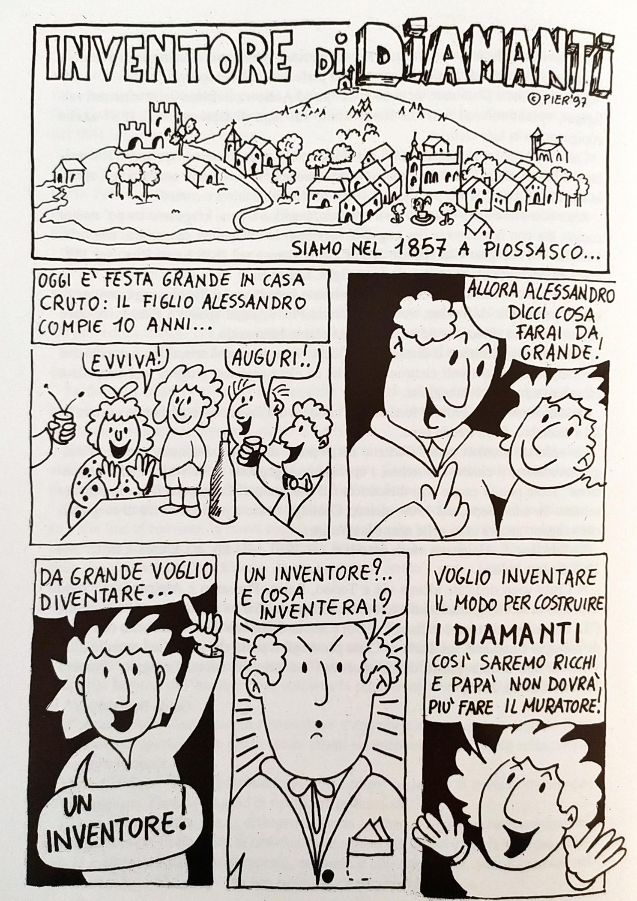

TRA SCIENZA E INDUSTRIA
Il XIX secolo fu un’epoca di grandi invenzioni, caratterizzata da un rapido sviluppo dell’industria. Anche il Piemonte vide nascere grandi inventori, le quali scoperte però spesso non vennero sfruttate in campo industriale, oppure vennero superate dai competitori stranieri. Questa sembra essere la storia comune di tre uomini di scienza piemontesi, Ascanio Sobrero, Galileo Ferraris e Alessandro Cruto, ognuno con il proprio “avversario” straniero.
ASCANIO SOBRERO
UNA SCOPERTA ESPLOSIVA

ASCANIO SOBRERO
Il 12 ottobre 1812 nasce a Casale Monferrato Ascanio Sobrero, destinato a diventare uno dei più importanti chimici italiani della sua epoca, soprattutto per i risvolti applicativi delle sue scoperte.
Sobrero inizia gli studi universitari a Torino intorno al 1830, allievo di Giobert, distinto chimico dedito alla chimica applicata. In quel periodo però l’ambiente chimico torinese non segue il passo di ciò che accadeva fuori dalla penisola, così il nostro Sobrero all’età di 28 anni, nel 1840, decide di trasferirsi oltralpe e trovare migliore alimento per la sua conoscenza a Parigi, presso il laboratorio di Pelouze. Nel 1843 si trasferisce per 6 mesi a Giessen, in Germania, presso Justus Von Liebig, il chimico tedesco noto ai più per aver inventato il dado da brodo.


L’importanza di Liebig nel campo della chimica va però oltre a questa invenzione culinaria e alla sua opera di scienziato. Il suo merito è infatti proprio quello di aver istituito la scuola di Giessen, modello di numerose altre scuole di chimica, che attirava studenti da tutta Europa.
Nel suo periodo all’estero, Sobrero entra in contatto con un “ambiente nitrico”: molti chimici, specialmente francesi e tedeschi, si occupano in questo periodo di composti nitrici, e Sobrero ha così l’occasione di appassionarsi a questi studi. Tornato poi a Torino, mette in campo ciò che ha appreso dai grandi chimici stranieri. Diventa docente di chimica presso la Scuola di Meccanica e Chimica applicata alle Arti di Via Po. Ed è proprio in via Po, nell’ex laboratorio chimico, che avviene la scoperta: nel 1847 Sobrero sintetizza per la prima volta la nitroglicerina. Il chimico piemontese intuisce il potenziale che la sua scoperta potrebbe rappresentare in campo industriale, ma probabilmente conoscendo anche la pericolosità del composto, continua a dedicarsi ai suoi studi e sono sue altre importanti scoperte ( come ad esempio il sobrerolo, chiamato così in suo onore).

Tredici anni dopo, nel 1860, Sobrero riprende gli studi sulla nitroglicerina, ne descrive i metodi pratici di preparazione e le proprietà fondamentali e pubblica una Nota su una rivista scientifica. Nel 1863 Alfred Nobel comincia a preparare industrialmente la nitroglicerina e a commercializzarla come esplosivo. Nobel è reticente riguardo la precisa origine della sua idea di utilizzare la nitroglicerina come esplosivo, ma è probabilmente la nota di Sobrero del 1860, ripubblicata nel 1862 , che illumina il chimico svedese. Il nome di Sobrero non viene dimenticato, e lo stesso Nobel riconosce i meriti dell’italiano, ma spesso girano notizie contraddittorie che attribuiscono allo svedese la scoperta della nitroglicerina. Il successo industriale di Nobel finisce spesso per oscurare il ruolo di Sobrero, che tanto ha contribuito al progresso della chimica applicata. Nobel trascorre molto tempo in Italia e apre un dinamitificio ad Avigliana, ma i due scienziati dai destini intrecciati non si incontreranno mai.

COS’E’ LA NITROGLICERINA
Ascanio Sobrero sintetizza per primo la nitroglicerina a Torino nel 1847. In quel periodo molti chimici in giro per l’Europa si stavano occupando di esperimenti legati ai composti nitrici, in particolare Sobrero riprende inizialmente gli esperimenti del 1845 del chimico Christian Schönbein di Basilea per la sintesi di nitrocellulosa.
Prima ancora della nitroglicerina, Sobrero scopre un altro esplosivo, meno potente della nitroglicerina: il nitrosaccarosio, lo zucchero fulminante, poi chiamato vixorite. Gli esperimenti che portano Sobrero a scoprire il nitrosaccarosio e poi la nitroglicerina si basano sul processo di nitrazione di composti organici.

La nitroglicerina si presenta come un composto liquido oleoso di colore leggermente volto al giallo. La sua pericolosità deriva dal fatto che i legami tra le molecole sono deboli: si tratta di un composto molto instabile.
A proposito delle proprietà esplodenti della nitroglicerina, Sobrero scrive in una nota del 1847 “Quando conobbi questa sua proprietà io ero lontano da credere che essa la possedesse in grado così eminente (...) volli decomporne una gocciola in un tubo di vetro: una detuonazione ridusse in polvere il tubo, sicchè più nulla non me ne rimase fra le dita. Molte scheggette di vetro mi ferirono la mano ed il viso: un mio amico che era presente ed a più d’un metro di distanza ne ebbe il viso ferito in più luoghi. Questi tentativi sono talmente pericolosi che miglior consiglio è il non farli.”
La nitroglicerina detona con il calore (alla temperatura di 200°C) ma è pericolosa anche quando congela, a 13°C: al suo interno si formano cristalli sottilissimi che si spezzano facilmente innescando un’esplosione.

ALFRED NOBEL
Alfred Nobel nasce nel 1833 a Stoccolma e si trasferisce nel 1842 con la famiglia a San Pietroburgo, dove già si trovava il padre che lavorava nell’industria di armamenti e si occupava di esplosivi. La passione per gli esplosivi viene tramandata al figlio Alfred, che studia privatamente ed eccelle particolarmente in chimica. Quindi, quando Nobel legge della nitroglicerina, è già alla ricerca di nuovi esplosivi. Al tempo, l’industria di armamenti era più o meno ferma alla polvere da sparo. I Nobel provano ad implementare gli effetti della polvere aggiungendo della nitroglicerina e brevettano l’idea nel 1863. Ma già nel 1861 Nobel va in giro per l’Europa a cercare finanziamenti: nel 1864 viene istituita la società Nobel e aperta la prima fabbrica di nitroglicerina a Vinterviken, presso Stoccolma. Il composto, scoperto da Sobrero, viene allora chiamato “l’olio esplosivo di Nobel”: così il nome dello svedese comincia a essere associato alla scoperta.
Trattare con la nitroglicerina è particolarmente pericoloso, e il merito di Nobel è quello di averla resa più maneggevole, mescolandola con materia inerte assorbente (farina fossile), ottenendo un composto esplosivo ma meno pericoloso. Nel 1867 viene così brevettata la dinamite.
Nobel si arricchisce velocemente e apre molti stabilimenti, uno dei quali ad Avigliana, presso Torino: il dinamitificio è oggi visitabile.

- Segatura (o altro tipo di materiale assorbente) intrisa di nitroglicerina
- Contenitore del materiale esplosivo
- Detonatore
- Cavo collegato al detonatore

Alfred Nobel sembra quindi incarnare la figura dell’industriale spregiudicato, che commercializza un esplosivo letale e oscura i meriti di un altro scienziato. Allora perché lo ricordiamo come un grande filantropo? In effetti, l’istituzione dei premi Nobel e l’opera filantropica dello svedese, nasce proprio da una crisi di coscienza. Nel 1888 il fratello di Alfred, Ludvig, muore a Cannes in una delle fabbriche di dinamite, ma un giornale francese pubblica erroneamente il necrologio di Alfred Nobel. Il titolo recita “Il mercante della morte è morto”, e l’articolo continua: “Alfred Nobel, che divenne ricco trovando il modo di uccidere il maggior numero di persone nel modo più veloce possibile, è morto ieri.”
In un momento epifanico, l’imprenditore comincia a pensare a come sarà considerato dopo la sua morte, e decide di fondare i famosi premi Nobel, lasciando la sua ingente eredità a questo scopo.


USO IN MEDICINA
Come può la nitroglicerina, usata come esplosivo, essere anche un medicinale?
Già dalle prime annotazioni di Sobrero, sembra difficile accostare questa sostanza ad un medicinale. Il chimico infatti ne descrive il sapore, “dolcigno, aromatico, pungente”, ma avverte di stare attenti ad esplorare questa qualità e dice di non ingerire la sostanza, perché anche soltanto una gocciolina di nitroglicerina sulla lingua provoca una forte emicrania.
Come spesso accade, la nuova scoperta scientifica ha dei risvolti applicativi che ci sembrano inaspettati. Ma Ascanio Sobrero, che aveva studiato medicina, si interessa dell’azione fisiologica della nitroglicerina fin dal 1847, anno in cui la sintetizza per la prima volta, e il nuovo composto comincia ad essere usato come medicinale già dal 1854 in America, sotto il nome di glonoina. Il farmaco è un antianginoso, ovvero un medicinale vasodilatatore utilizzato per la cura della angina pectoris.
La nitroglicerina viene solitamente usata sottoforma di tavolette sub-linguinali oppure con cerotti transdermici..JPG)
GALILEO FERRARIS
IL MOTORE ELETTRICO

GALILEO FERRARIS
Galileo Ferraris nacque a Livorno Piemonte, oggi Livorno Ferraris, il 30 ottobre 1847. Rimasto orfano di madre iniziò a istruirsi presso la casa di uno zio medico; all’età di 22 si laureò in ingegneria civile con una tesi riguardante la trasmissione a distanza di energia cinetica: questo è il tema centrale della sua ricerca scientifica, fondata sullo studio della distribuzione dell’energia nelle case e nelle officine.
A partire dal 1877 divenne assistente di fisica tecnica presso il Regio Museo Industriale di Torino, dove nel 1889 fondò una scuola di elettrotecnica in cui insegnò fino alla sua morte, avvenuta nel 1897. Tale istituto era particolarmente innovativo poiché era tra le prime scuole al mondo specializzate nell’insegnamento dell’elettrotecnica con corsi specialistici, frequentata anche da funzionari delle amministrazioni pubbliche che giungevano a Torino per apprendere l’utilizzo delle nuove tecnologie.
Nel 1885 scoprì il campo magnetico rotante e negli anni successivi progettò diversi modelli di motore elettrico che sfruttavano questa idea, tuttavia la comunicazione ufficiale della sua scoperta avvenne solo nel 1888, aprendo una contesa con l’americano Nikola Tesla riguardo alla paternità. A questo proposito Galileo Ferraris scrisse ad un amico: “Senza che io me ne sia occupato ho visto a Francoforte che tutti attribuiscono a me la prima idea, il che mi basta. Gli altri facciano denari, a me basta quel che mi spetta: il nome” e in altre occasioni sottolineò di essere “un professore, non un industriale”, mettendo l’accento sul suo ruolo di centrale importanza nell’istruzione di giovani ingegneri e nella diffusione dell’utilizzo dell’energia elettrica nelle città.
Dal 1887 fu consigliere e assessore municipale della città di Torino, impegnandosi in prima persona nello sviluppo della città facendosi promotore dell’illuminazione pubblica e dell’elettrificazione dei tram.
Ricorda Edmondo De Amicis nel suo racconto “La carrozza” un divertente aneddoto riguardante l’ingegnere, pronto a mescolarsi con la gente per comprenderne le preoccupazioni legate alle innovazioni tecnologiche introdotte grazie al suo intervento:
“Ma anche la bella compagnia in quei giorni dava ragion di ridere alle sue spalle. Trovo notato fra gli appunti: - Galileo Ferraris - . È il ricordo d’una corsa fatta con lui per un tratto del Viale Margherita. I giornali avevano pubblicato in quel giorno le proposte fatte dalla Società al Municipio per l’istituzione dei tranvai elettrici. E spesso, tra i passeggeri, s’udivano su quell’argomento delle uscite amenissime. Sarebbero forse state più guardinghe le due eleganti bottegaie o modiste o quidsimile, che si divertirono per cinque minuti, se avessero saputo che quel bel signore bruno e pallido, dal sorriso dolcissimo e dagli occhi socchiusi, il quale stava leggermente chino per raccogliere, senza farsi scorgere, i loro discorsi, era un elettricista di fama mondiale. La più giovane, con un cappellino incoronato di magnolie, giurava che sui nuovi tranvai elettrici non avrebbe mai messo piede, e domandata dall’altra del perché, rispondeva vivamente: - Ma come? E s’a se scianca ‘l fil?”.

REGIO MUSEO INDUSTRIALE
Il Regio Museo industriale Italiano venne istituito da un decreto nel 1862 con l’obiettivo “di promuovere l’istruzione industriale e il progresso delle industrie e del commercio” sul modello delle scuole di istruzione tecnica superiore che si stavano sviluppando a Londra e Parigi. Esso aveva sede dove oggi sorge Piazzale Valdo Fusi, ma rimase distrutto durante un bombardamento aereo nel 1943.
Questo fu un luogo di grande rilevanza nello sviluppo della società torinese: esso era non solo un’esposizione permanente dei nuovi progressi industriali, ma anche un luogo in cui si tenevano corsi di insegnamento con lo scopo di ampliare le conoscenze tecniche dei giovani ingegneri.
Qui nel 1879 Galileo Ferraris presentò un ciclo di conferenze riguardanti l’illuminazione elettrica, che egli riteneva avrebbe presto sostituito quella a gas: tra gli uditori vi era anche il giovane Alessandro Cruto, che ebbe in questo modo l’idea di partenza per la realizzazione della sua lampada a filamento.
Nel 1887 l’ingegnere piemontese tenne un corso di elettrotecnica che prevedeva, oltre alle tradizionali lezioni, alcune esercitazioni pratiche e nell’anno successivo venne istituito all’interno dei locali del Regio Museo Industriale un vero e proprio Laboratorio di Elettrotecnica, che attirò studenti da tutta Italia; alcuni strumenti e apparecchiature provenienti da tale laboratorio sono oggi conservati presso l’Istituto elettrotecnico nazionale Galileo Ferraris.
La fama del Museo divenne tale da rendere necessario, nel 1897, un progetto di ampliamento dei locali che dotarono l’edificio di nuove aule per le lezioni e per il disegno e apposite aree per i laboratori.
L’esposizione generale italiana del 1898 vide la partecipazione diretta del Museo che presentò una propria mostra contenente disegni e progetti degli allievi.
Nel 1906, dalla fusione di questo istituto con la Scuola di Applicazione per gli ingegneri nacque il Politecnico di Torino.

NIKOLA TESLA
Nikola Tesla nacque il 10 luglio 1856 in una famiglia serba nei territori dell’attuale Croazia. Frequentò in Austria L’università tecnica di Graz, ai tempi considerata uno dei migliori istituti del mondo, e qui iniziò ad interessarsi agli impieghi della corrente alternata. Nel 1882 si recò a Parigi per lavorare alla Continental Edison Company, dove si occupò di migliorare gli apparati elettrici. Egli affermò di aver ideato in quell’anno il motore a induzione sfruttando il campo magnetico rotante, brevettato poi nel 1888 e la cui originalità venne contestata dal piemontese Galileo Ferraris. Nel 1884 si trasferì negli Stati Uniti dove venne assunto da Thomas Edison nella sua azienda Edison Machine Works, dove si occupò di riprogettare l’esistente generatore di corrente continua.
Nel 1887 costruì il primo motore a induzione a corrente alternata senza attrito e iniziò inoltre ad occuparsi di quelli che diventeranno poi noti come raggi X, brevettò un primo modello di radio e effettuò diversi esperimenti sulla telegrafia senza fili, sull’elettricità atmosferica e sulla trasmissione di energia su lunghe distanze.
Egli fu coinvolto in un’altra controversia riguardante un’invenzione: il brevetto della radio venne inizialmente riconosciuto all’inventore italiano Guglielmo Marconi e solo in seguito alla morte di Tesla, avvenuta nel 1943, venne assegnata all’americano la paternità della scoperta.
Egli si scontrò con Thomas Edison nella cosiddetta “guerra delle correnti”, una competizione commerciale per il controllo del mercato elettrico che vedeva contrapposte la corrente alternata, promossa da Tesla, e la corrente continua, ritenuta la soluzione più adatta dal suo avversario: l’idea di Edison era quella di sviluppare un sistema di distribuzione elettrica che mantenesse lo stesso potenziale lungo tutta la linea, questo metodo aveva però l’inconveniente di dissipare parte dell’energia lungo il trasporto, problema che risultava meno incisivo usando la corrente alternata. Attraverso una serie di dimostrazioni pubbliche Tesla riuscì a mostrare l’efficienza del suo progetto e a convincere l’opinione pubblica nonostante la campagna diffamatoria di Edison che sottolineava la presunta pericolosità dell’idea: nel 1889 venne costruito il primo impianto idroelettrico a corrente alternata e nel 1892 Tesla ottenne l’appalto per la realizzazione di una centrale idroelettrica sulle cascate del Niagara.
.jpg)

IL CAMPO MAGNETICO ROTANTE
L’idea del campo magnetico rotante sembra essere nata da una passeggiata durante la quale Galileo Ferraris si soffermò ad osservare la successione dei portici di via Cernaia: egli intuì che due bobine disposte perpendicolarmente percorse da correnti alternate sfasate generavano un campo magnetico rotante. I risultati dei suoi studi vennero mostrati in pubblico per la prima volta nel 1885, quando l’ingegnere piemontese presentò “il suo giocattolo”, come era solito chiamare il primo prototipo di motore a corrente alternata. Egli realizzò negli anni successivi quattro modelli di motore che sfruttavano il campo magnetico rotante e nel 1888 ricevette un premio dalla società americana Westinghouse per la sua scoperta.
Negli stessi anni anche l’americano Nikola Tesla stava svolgendo esperimenti simili, riuscendo poi a sfruttare la scoperta producendo motori elettrici su scala industriale.

LE AUTOMOBILI ELETTRICHE
Tra fine ‘800 e inizio ‘900 non era ancora ben definito quale sarebbe stato il modello di motore più usato nel futuro e pertanto si assistette inizialmente ad uno sviluppo parallelo di automobili elettriche ed automobili a benzina. Le auto elettriche non sono infatti un’idea recente, ma una realtà la cui storia inizia negli anni ‘30 dell’Ottocento: il motore elettrico sembrava inizialmente essere il modello più adatto sia per quanto riguarda l’affidabilità, sia perché più silenzioso. Negli anni finali dell’’800 i modelli a batteria vennero sia usati per il trasporto pubblico, sia venduti a privati e avevano una migliore resa rispetto ai motori a scoppio; inoltre già nei primi anni del ‘900 una ditta torinese, la STAE, iniziò a produrre i primi veicoli ibridi, in cui i due motori venivano utilizzati in maniera accoppiata.
Il motore a combustione interna ebbe però un’evoluzione tecnica maggiore e l’introduzione del motorino di avviamento rese questo sistema il più adatto alle esigenze dell’epoca: con l’avvento della Grande Guerra e la necessità di compiere spostamenti più lunghi la durata limitata delle batterie iniziò a risultare un problema rilevante. Lo sviluppo di motori elettrici riprenderà nel secondo dopoguerra.
Presso il Museo dell’Auto di Torino sono presenti numerosi esemplari di vetture elettriche del passato e alcuni prototipi di particolari “veicoli del futuro” alimentati da pannelli fotovoltaici o ad idrogeno.
ALESSANDRO CRUTO
L'INVENZIONE LUMINOSA

ALESSANDRO CRUTO
Alessandro Cruto nasce nel 1847 a Piossasco, presso Torino. Cruto è il figlio di un capomastro, che non può permettersi di farlo studiare, così anche Alessandro deve lavorare. La sua passione per la scienza però è fortissima, e il giovane studia da solo di notte e nei momenti di riposo. A cena con la famiglia, una sera Alessandro scopre da un cugino che il diamante è carbone cristallizzato: quest’idea diventa un pensiero fisso, e il giovane inventore decide che vuole produrre il diamante in laboratorio. Racimola i soldi necessari per aprire un laboratorio presso la sua abitazione, rinuncia alla pipa, chiede prestiti alla famiglia e a qualche amico.
Piossasco si trova a 20 chilometri da Torino. Non sono pochi da fare a piedi, ma Cruto compie spesso questo tragitto per ascoltare lezioni e conferenze nel capoluogo.
Nel maggio 1879 Galileo Ferraris è a Torino per un ciclo di conferenze sulla lampadina elettrica. In questo periodo Ferraris è ancora scettico sul futuro di questa nuova tecnologia. Edison ha brevettato la sua lampadina, ma ha una luce fioca ed è costosa.
Cruto arriva un po’ in ritardo alla conferenza del 24 maggio, ma ciò che riesce ad apprendere è sufficiente. La lampadina ad incandescenza ha al suo interno un filamento attraversato dalla corrente, ma ancora non è stato trovato il materiale ottimale per realizzarlo: Cruto si accorge di avere la soluzione in tasca. Le lamine di carbonio che ha realizzato con lo scopo di produrre il diamante, possono infatti essere impiegate per realizzare la sua lampadina, che vede luce il 4 marzo 1880. E questa volta si tratta di una luce bianca, potente e duratura, decisamente migliore di quella del brevetto di Edison. L’inventore apre la sua industria ad Alpignano e raggiunge alcuni importanti traguardi riassunti nel fumetto realizzato da Pierino Rolandone nel 1997, in occasione del 150° anniversario della nascita di Alessandro Cruto.


UN’INVENZIONE LUMINOSA

- Bulbo di vetro
- Gas inerte o vuoto
- Filamento
- Filo di andata
- Filo di ritorno
- Supporto del filamento
- Supporto della lampada
- Contatto con la base
- Base a vite
- Isolante
- Contatto sulla base
La storia della lampadina è lunga e Edison e Cruto non sono gli unici ad aver contribuito a questa invenzione.
La lampadina ad incandescenza è formata da un bulbo di vetro, al cui interno c’è un filamento che, attraversato dalla corrente, emette luce. Già nella prima metà dell’Ottocento molti scienziati compivano esperimenti per trovare il filamento più adatto per la lampadina. Vengono usati per esempio il carbone, che però non ha lunga durata, e metalli come il platino, che durano di più ma hanno lo svantaggio di produrre una luce rossastra e poco potente.
Nel 1878 Joseph Swan, inventore inglese, si distingue per la sua lampadina con filamento di filo di cotone trattato con acido solforico. Solamente un anno dopo lo statunitense Edison brevetta la sua lampadina, e tra i due scoppiano le battaglie legali, che terminano con un accordo commerciale e la costituzione della società elettrica “Edison&Swan”. La fama di Edison ha però oscurato la memoria dell’inglese, nonostante il primato temporale di quest’ultimo. Le ricerche di Edison però non si fermano; la luce della sua lampadina viene definita da una rivista scientifica come la luce di un “caldo tramonto di un autunno italiano”. Edison prova con i materiali più disparati, come tele di sacco, celluloide, trucioli di cedro. Si procura anche fibre esotiche: prova con la fibra di un bambù gigante dell’isola di Ceylon (Sri Lanka).

Sarà però Cruto a realizzare, nel marzo 1880, una lampadina definita dalla Gazzetta Piemontese (ottobre 1882) di luce “costante, limpida, molto meno costosa delle altre luci elettriche”.
La lampadina Cruto ha un filamento di carbonio puro sintetico, realizzato dal piossaschese in laboratorio, che permette di produrre una luce bianca e potente.

L’ESPOSIZIONE INDUSTRIALE
A partire dal 1881 si sviluppò l’idea di ospitare a Torino un’esposizione universale sul modello di quelle che si andavano sviluppando in quegli anni: a partire dalla Great Exhibition tenutasi a Londra nel 1851 le più importanti città europee iniziarono a organizzare grandi mostre con lo scopo di mostrare i progressi della società e aprire il dialogo sulle ultime innovazioni.
Nel 1884 si tenne presso il Parco del Valentino l’Esposizione industriale e artistica italiana: in questa occasione vennero realizzati padiglioni appositi per ospitare le mostre, tra essi il Borgo medievale ancora oggi visitabile. L’esposizione si estendeva per un’area molto vasta e comprendeva otto sezioni: Belle Arti, Produzioni scientifiche e letterarie, Didattica, Previdenza e assistenza pubblica, Industrie estrattive e chimiche, Industrie manifatturiere, Economia rurale. Parteciparono più di 14.000 espositori e circa tre milioni di visitatori italiani e stranieri riempirono le strade di Torino.
All’interno dell’Esposizione vi era un padiglione dedicato all’elettricità, la cui supervisione fu assegnata a Galileo Ferraris: al suo interno l’illuminazione era completamente affidata all’elettricità, in parte utilizzando lampade ad arco, in parte utilizzando le nuove lampadine a filamento sviluppate da Alessandro Cruto e Thomas Edison in quegli anni, che avrebbero segnato il futuro dell’illuminazione.


LA FABBRICA DI ALPIGNANO
L’esperienza industriale
Nel 1880 Alessandro Cruto ha realizzato la sua lampadina ad incandescenza. A questo punto, deve trovare degli investitori interessati alla sua invenzione. Nel 1882 alcuni “capitalisti” (così li definisce Cruto) investono su di lui e fondano una società.
La lampadina Cruto è di ottima qualità e ha un prezzo economico: la società americana Westinghouse acquista i diritti della lampadina italiana, preferendola a quella del connazionale Edison!
Riconosciuto il valore dell’invenzione, è ormai l’ora dell’industrializzazione: la prima rudimentale fabbrica si trova a Piossasco ed è ancora un ibrido con il vecchio laboratorio. Presto gli spazi risultano insufficienti e la fabbrica si sposta ad Alpignano, cittadina a meno di 20 chilometri da Piossasco.
Alessandro Cruto è un uomo intelligente è attento, tiene molto alle sue lampadine, frutto di tanta fatica, e vorrebbe seguire da vicino la produzione. Il piossaschese è però anche un uomo sensibile e poco abituato ad avere a che fare con i capitalisti. I suoi soci vogliono arricchirsi e creano un clima di tensione e discordia, al punto che Cruto decide alla fine di allontanarsi da Alpignano. D’altronde l’industria è per Cruto un bel traguardo, ma il suo interesse rimane la ricerca. Nell’ultima parte della sua vita continua i suoi studi e si diletta in invenzioni come un “sistema di fontane luminose”. Egli stesso scriverà: “Ma vi dirò che meglio essere industriale desidero continuare i miei studi. Fui industriale e non desidero ritornarvi. Non mi trovo fatto per tale cosa”.

La sede di Alpignano
Dal 1886 la società italiana di Elettricità Sistema Cruto ha la sua fabbrica di lampadine ad Alpignano, in via Matteotti 2. Questa sede continua a essere legata alle lampade a lungo: nel 1927 viene rilevata dalla PHILIPS. Dal 2004 è un museo dedicato all’inventore piossaschese e alla sua lampadina.

THOMAS EDISON
Thomas Edison e Alessandro Cruto nascono nello stesso anno, il 1847. I due inventori sono però figli di due mondi molto distanti.
Cruto è un uomo modesto e schivo, Edison una personalità ingombrante, un uomo ricco e scaltro. Ciò che certamente li accomuna è la totale dedizione al lavoro, l’instancabilità nello sperimentare nuove soluzioni, la passione nello studio. D’altronde, come diceva Edison, “il genio è per l’1% ispirazione. per il 99% traspirazione, ovvero sudore”.
Edison, nel momento in cui comincia a lavorare alla sua lampadina, è già famoso per altre invenzioni (per esempio il fonografo), ed ha molti capitalisti disposti ad investire sul suo lavoro. Un gruppo di società gli ha assicurato una rendita annua e creato due laboratori per i suoi esperimenti (prima a Newark, poi a Menlo Park, presso New Jersey). Inoltre a lavorare agli esperimenti di Edison ci sono 300 uomini specializzati.
Ben diversa è la situazione di Cruto, nato a Piossasco, cittadina alle porte di Torino. Alessandro Cruto è figlio di un capomastro, non può permettersi gli studi così deve lavorare con il padre e studiare da autodidatta. Il contesto in cui vive non è incoraggiante: costruisce un rudimentale laboratorio presso la sua abitazione, sogna di diventare un inventore, e i suoi concittadini lo chiamano “il matto”. Non ha nessuno che investe su di lui, può contare solo su pochi prestiti di amici e sui suoi risparmi. I suoi esperimenti poi, inizialmente sono rivolti al tentativo di produrre del diamante artificiale, solo ad un certo punto scopre che le lamine di carbonio puro che è riuscito ad ottenere possono essere ottimali per il filamento della lampadina.
Il lavoro di Edison è invece fin dall’inizio caratterizzato da metodo e senso pratico, secondo una mentalità fortemente imprenditoriale. L’inventore statunitense è pioniere di un’imprenditoria a “ciclo completo”, dalla ricerca fino alla commercializzazione del prodotto. Per esempio, prima ancora di brevettare la lampadina, si preoccupa dell’effettiva possibilità di distribuire la corrente elettrica per la città, affinché il prodotto sia realmente commercializzabile.
Al contrario, quando l’invenzione di Cruto attira l’attenzione degli investitori, questi ultimi vogliono speculare sul nuovo prodotto, e cercano di esautorare l'inventore dalla dirigenza dell’industria.
Edison quindi dispone sia di mezzi che di metodo potentissimi. Il suo successo è preannunciato, probabilmente data anche la fama che l’americano già vantava.
Cruto parte in grande svantaggio, ma alla fine riesce a raggiungere importanti traguardi, sebbene modesti di fronte ai capitali gestiti dalla società americana.
Ciò che lascia più amarezza è il fatto che l’inventore italiano sia così poco noto, anche nella sua stessa patria. Probabilmente il fatto che Cruto non abbia avuto la possibilità di studiare ha negato all’inventore di ottenere visibilità a livello accademico e anche questo potrebbe aver contribuito a oscurarne la memoria.
La storia però non è fatta di se: l’impegno che la società può prendersi ora è quello di ricordare le menti brillanti del passato, per assicurare il massimo sostegno a quelle del presente.
ALTRI APPROFONDIMENTI
L’INDUSTRIA PIEMONTESE
Nel 1864 la capitale d’Italia si sposta da Torino a Firenze. Tutte le attività legate alla politica e alla diplomazia vengono trasferite, e questo cambiamento, sebbene preannunciato, affligge un duro colpo al capoluogo piemontese, dove si verificano disordini popolari e malcontento. La crisi sembra inevitabile, ma non manca la volontà di arginare il problema. Nel 1865 l’allora sindaco Emanuele Luserna di Rorà lancia un Appello diretto agli industriali esteri e nazionali; la popolazione torinese non si abbatte e la città promuove iniziative e opere pubbliche. La crisi preannunciata non si rivela in realtà drammatica e il contesto industriale si risolleva. L’esposizione generale italiana tenutasi a Torino nel 1884 rappresenta a pieno questa ripresa.

INVENZIONI E BREVETTI
Cos’è un brevetto?
Un brevetto è un attestato ufficiale (rilasciato da un apposito ufficio) che conferisce un diritto esclusivo di disporre di un’invenzione. Il brevetto impedisce a chi non ne è titolare di sfruttare un’invenzione senza autorizzazione, protegge quindi la proprietà intellettuale ma anche la possibilità di guadagnare sulle invenzioni.
XIX secolo
Nell’Ottocento si assiste a un periodo di grande fermento per quanto riguarda le nuove invenzioni. L’avanzare della conoscenza scientifica provoca uno sviluppo tecnologico che coinvolge molti scienziati da diverse parti del mondo, che spesso studiano gli stessi fenomeni nello stesso periodo. Questo provoca non poche controversie e spesso, per nuove scoperte e invenzioni, non si riesce a risalire ad un unico inventore. Non sempre poi il comportamento di chi si contende un brevetto può essere definito cristallino: emblematica è la vicenda dell’invenzione del telefono, che coinvolge l’italiano Antonio Meucci, emigrato a New York, e lo statunitense Alexander Graham Bell. Meucci brevetta la sua invenzione, ma non può sfruttarla per motivi economici, così si appoggia a un certo signor Grant, direttore di una grande compagnia telegrafica, consegnando tutto il suo materiale. Ma dopo mesi di attesa, l’italiano chiede la restituzione del materiale, che non avviene. Meucci non ha i soldi per rinnovare il brevetto e poco dopo, nel 1876, Bell presenta il suo brevetto e con l’appoggio di potenti investitori, crea una fiorente compagnia telefonica. Nel 1885 è accusato di frode: viene fuori che Bell aveva un accordo con il signor Grant, alla cui compagnia telegrafica versava il 20% dei guadagni. Il telefono di Bell era effettivamente una copia di quello i Meucci, e anche se non ne abbiamo le prove certe, possiamo immaginare come siano andate le cose.
Individuare l’inventore
Spesso tendiamo a ricercare nel passato delle personalità solitarie che si stagliano sulla conoscenza comune e incarnano il progresso. Così vorremmo che l’innovazione fosse il risultato di facili equazioni, che associano a un’invenzione un unico inventore. La realtà è come sempre più complessa di queste semplificazioni. Il caso appena citato per esempio, ci ricorda come chi ha una disponibilità economica, una certa visibilità e l’annessa possibilità di competere in campo industriale, parte con estremo vantaggio al fine di passare alla storia. Inoltre bisogna riconoscere che un'invenzione è fisiologicamente il derivato di molteplici contributi, a partire dalle scoperte scientifiche che aprono nuovi campi di applicazione, ed è normale, soprattutto in un secolo come il XIX, che persone in contesti anche molto lontani arrivino agli stessi risultati nello stesso periodo.
L'IMPATTO DELL'INDUSTRIA NELL'URBANIZZAZIONE
La rivoluzione industriale è stata il trampolino di lancio per lo sviluppo di molte regioni italiane, il Piemonte, in particolare, è stato coinvolto in questa crescita non solo dal punto di vista dell'arricchimento generale, ma anche per i profondi cambiamenti di tipo urbanistico di cui sono state protagoniste le sue città. Il caso emblematico è Torino, che ha visto la rapida crescita del quartiere Mirafiori Sud con l'avvento della Fiat. Non è, però, l'unico caso in cui l'industria ha influenzato lo sviluppo urbano, è noto, infatti, il caso del piccolo Villaggio Leumann, anch'esso realizzato per garantire un'abitazione ai dipendenti dell'industria tessile Leumann, in dimensioni nettamente più piccole, e la situazione ad Ivrea con l'azienda Olivetti.
MIRAFIORI SUD
LA FIAT

LA FAMIGLIA AGNELLI
Giovanni Agnelli
Giovanni Agnelli, capostipite della famiglia, nonché fondatore della Fiat nasce a Villar Perosa il 13 agosto 1866 sotto il nome di Giovanni Francesco Luigi Edoardo Aniceto Lorenzo Agnelli.

Figlio di Edoardo Agnelli e Aniceta Frisetti è stato imprenditore, politico e militare italiano; nasce in una famiglia di proprietari terrieri e si diploma a Torino conseguendo la maturità classica. Inizialmente intraprende la carriera militare presso l’Accademia militare di Modena, raggiungendo il grado di ufficiale di cavalleria di prim'ordine nel reggimento Savoia Cavalleria e ottenendo alcune onorificenze, per poi interessarsi alle innovazioni tecnologiche e ai progressi della rivoluzione industriale inglese, seguendo le correnti europee della Belle Époque, fino a maturare il desiderio d'intraprendere una carriera dedita interamente alla produzione di nuovi mezzi tecnologici per migliorare la vita quotidiana.

Seguendo questo sogno nel 1893 lascia la carriera militare per far ritorno a Villar Perosa per un breve periodo dove si dedica al commercio di legnami e sementi.
Nel 1896 inizia a occuparsi di imprenditori diventando socio di capitale nelle Officine Storero di Torino, che costruivano biciclette e l’11 luglio 1899 fondò insieme ad altri imprenditori torinesi, la Fabbrica Italiana Automobili Torino, conosciuta come FIAT.
L’intero gruppo dirigente è travolto dalla crisi del 1906-1907 e anche Agnelli deve dimettersi in seguito al procedimento giudiziario aperto nei suoi confronti per attività speculativa in Borsa; nell’assetto dell’impresa ricostituita nel 1909, però, Agnelli risulta ancora Amministratore delegato.
Nonostante il successo negli affari, la sua vita è segnata dalla morte dei figli Aniceta nel 1928 ed Edoardo nel 1935 a causa di un incidente aereo a Genova e dalle conseguenze legali del loro decesso, legate alla tutela dei nipoti.
Negli anni Quaranta, settantenne, sceglie il nipote Gianni, figlio di Edoardo, come successore alla guida dell’azienda.
Muore a Torino il 16 dicembre 1945 dopo essere stato assolto dall’accusa di compromissione con il regime fascista.
Dal 2002 il suo nome è inserito nell’Automotive Hall of Fame tra le più famose personalità del mondo automobilistico.
Gianni Agnelli
All’anagrafe Giovanni Agnelli, il nipote del fondatore della più grande azienda piemontese nasce a Torino il 12 marzo 1921; imprenditore, politico, senatore a vita e ufficiale del Regio Esercito, era noto come “L’Avvocato” per i suoi studi in giurisprudenza, nonostante non avesse conseguito l’abilitazione alla professione, non avendo sostenuto l’esame da procuratore.
Figlio di Edoardo Agnelli e Virginia Bourbon del Monte, è il secondo di sette figli, orfano dall’età di 14 anni dopo la morte del padre Edoardo a causa di un incidente aereo a Genova.

Frequenta il liceo classico Massimo d’Azeglio a Torino e viaggia negli Stati Uniti tra New York, Detroit e Los Angeles, salvo poi ritornare in Italia alcuni anni dopo e frequentare il corso per ufficiale di completamento alla Scuola di Applicazione di Cavalleria di Pinerolo. In seguito, viene arruolato nel 1° Reggimento “Nizza Cavalleria” come sottotenente e inviato con il CSIR sul fronte russo come addetto al comando fino al 1941.
Nel 1942 si unisce al Reggimento Cavalleggeri di Lodi, partecipa alla Campagna di Tunisia dove guadagna la Croce di guerra al valor militare nel 1943, lo stesso anno torna in Italia per volontà del nonno e si rifugia con la sorella in provincia di Arezzo (Toscana) dopo la caduta della dittatura di Mussolini. Dopo la degenza per un incidente durante un trasferimento viene arruolato a Roma come ufficiale di collegamento del Corpo Italiano di Liberazione con le truppe alleate.

Con la fine della guerra nel 1945 diviene presidente della RIV, società fondata da Roberto Incerti e dal nonno nel 1906, anche se è un incarico rappresentativo; lo stesso anno viene eletto sindaco di Villar Perosa, il paese di origine del nonno, e manterrà questa carica fino al 1980.
Il 23 febbraio 1946 firma l’accordo tra il CLN, le autorità alleate di occupazione e il governo italiano provvisorio, per la normalizzazione della conduzione della FIAT, della quale la famiglia Agnelli è il principale azionista; con questo accordo si ricostruisce il consiglio d’amministrazione della società restituendo a Vittorio Valletta la carica di amministratore delegato, sospesa a causa dell’accusa di collaborazionismo con i tedeschi.
Il 30 aprile 1966 sostituisce Valletta come presidente della Fiat, guidandola con l’obiettivo di espanderla sia in Italia, sia all’estero tentando di ampliare i mercati di vendita e costruendo nuovi stabilimenti. Inoltre, conclude alcune trattative con cui acquisisce società come la Lancia e la Ferrari.
L'ambizioso progetto di Giovanni Agnelli, per rendere noto al mondo il marchio FIAT, si realizza nell’arco di dieci anni con le unità produttive presenti su 4 continenti:
- Europa - Italia (Fiat, Lancia, Autobianchi, Ferrari), Spagna (Seat), Jugoslavia (Zastava), Polonia (F.S.M.).
- Sud America - Brasile (Automoveis), Argentina (Concorde).
- Asia - Turchia (Tofas).
- Africa - Piccole unità produttive in Egitto e Sud Africa.
Gli anni in cui è alla guida della Fiat, lo vedono protagonista anche di delicate trattative di tipo politico per arginare le rivolte dei lavoratori e dei sindacati che caratterizzano gli anni Sessanta; in queste situazioni emergono la diplomazia e le grandi abilità strategiche di Gianni Agnelli che riesce a mediare tra le parti e concludere trattative vantaggiose per sé e per la sua azienda.
Nel 1997 lascia formalmente la presidenza della Fiat e sceglie come suo successore il nipote ventunenne John Elkann a causa della morte prematura del nipote Giovanni Alberto Agnelli, figlio di Umberto Agnelli.
Muore il 24 gennaio 2003 a Torino all’età di 81 anni a causa di un carcinoma e viene sepolto nella cappella di famiglia a Villar Perosa.
John Elkann
John Philip Jacob Elkann nasce a New York l’1 aprile 1976, primo di due fratelli di Margherita Agnelli e Alain Elkann, ha inoltre cinque fratellastri nati dalle seconde nozze della madre con Serge de Pahlen. Elkann ha frequentato la scuola elementare nel Regno Unito e in Brasile, prima che la sua famiglia si trasferisse a Parigi, dove ha conseguito la maturità scientifica al Liceo pubblico Victor Duruy nel 1994; nel 1994 si trasferisce a Torino dove si laurea in Ingegneria Gestionale al Politecnico.

Durante il periodo universitario ha maturato esperienze di lavoro in numerose società mediante diversi tirocini, poi nel 1997 viene scelto dal nonno Gianni Agnelli come suo successore, dunque a 21 anni entra nel Consiglio d’Amministrazione della Fiat e dell’Accomandita Giovanni Agnelli B.V.
Inoltre, dal 2010 è presidente di Fiat Group e in seguito di GEDI Gruppo Editoriale, oltre che membro del Consiglio di Amministrazione di The Economist e PrtnerRe. È, inoltre, membro attivo di diverse organizzazioni senza scopo di lucro e di gruppi di esperti impegnati nel dibattito geopolitico globale, e trustee del Museum of Modern Art (MoMA). Nel marzo 2020, in seguito alla pandemia di COVID-19, l'amministratore delegato di FCA Mike Manley ha comunicato la decisione da parte di John Elkann e del CDA di rinunciare allo stipendio per tutto l’anno 2020. Il 10 dicembre 2020 assume ad interim la carica di amministratore delegato di Ferrari.

LA STORIA DELLA FIAT
Le origini della FIAT (Fabbrica Italiana Automobili Torino) risalgono al 1899 quando un gruppo i uomini d’affari torinesi, capeggiati da Giovanni Agnelli, si proposero come scopo la realizzazione di un prototipo di automobile. Tali investitori seppero approfittare del fermento creativo e del clima sociale favorevole che caratterizzava in quegli anni Torino, città che si presentava come laboratorio di innovazioni, soprattutto nel campo delle industrie. Le vetture FIAT seppero imporsi subito sia sul mercato italiano, sia su quello internazionale, qualificandosi come prodotti di lusso destinati ad un’élite di consumatori.

In particolare, l’azienda viene fondata ufficialmente l’11 luglio 1899 a Palazzo Lascaris a Torino, inizialmente come casa produttrice di automobili, salvo poi spaziare in futuro in altri settori tra i quali l’editoria, diventando il più importante gruppo industriale e finanziario a conduzione famigliare del Novecento.
L’idea di una casa produttrice di automobili totalmente italiana venne ad un ristretto gruppo di aristrocratici e imprenditori della fine dell’Ottocento, tra i quali Emanuele Cacherano di Bricherasio, Cesare Goria Gatti, il conte Roberto Biscaretti di Ruffia, il marchese Alfonso Ferrero de Gubernatis Ventimiglia e altri industriali, guidati da Giovanni Agnelli.

Non esistono fotografie della costituzione della Fiat, ma tutto ciò che avvenne in questa data storica a Palazzo Bricherasio è “narrato” in un celebre quadro di Lorenzo Delleani: il dipinto mostra i “Fondatori della Fiat” con al centro, nell’atto di firmare l’atto notarile, il padrone di casa Emanuele Cacherano di Bricherasio e attorno a lui, da sinistra, l’agente di cambio Damevino, Cesare Goria Gatti, il conte Roberto Biscaretti di Ruffia, l’avvocato Carlo Racca, il banchiere Ceirana Mayneri, il ricco possidente Giovanni Agnelli (che prese il posto dell’industriale Michele Lanza), Lodovico Scarfiotti ed il marchese Afonso Ferrero di Ventimiglia.
Il primo modello prodotto dalla nuova azienda, che inizialmente assunse il nome FIA (Fabbrica Italiana Automobili) fu il modello 3 ½ HP in 8 esemplari nel corso del 1899.

La prima produzione si svolse nell’officina Ceirano, acquistata con la fondazione della società, a partire dal 1916 iniziò la costruzione dello stabilimento produttivo del Lingotto, che entrò in funzione nel 1923.
L’azienda restò sempre di proprietà della famiglia Agnelli, che la guidò, prima con Giovanni Agnelli e poi con il nipote Gianni Agnelli, che la rese un’icona internazionale, specializzandola nel settore automobilistico. Attualmente la direzione è ancora nelle mani di un membro della famiglia, John Elkann, nipote, che Gianni Agnelli designò come suo successore quando dovette lasciare la presidenza dell’azienda.

Durante la prima guerra mondiale e soprattutto nel primo dopoguerra, l’azienda ha un’enorme crescita che si manifesta con la produzione di numerosi nuovi modelli da distribuire sul mercato e con l’ampliamento degli stabilimenti. A questo si accompagna anche un notevole sviluppo tecnologico e una prima espansione all’estero, con la costruzione di uno stabilimento in Russia e la produzione di automobili dal marchio FIAT in Francia, Spagna e Polonia.
Nel 1939 viene inaugurato lo stabilimento Mirafiori a Torino, con l’entrata in guerra dell’Italia, la produzione di automobili viene ridotta a favore di quella a fini bellici e questo favorisce una crescita a livello economico dell’azienda.

L’apice della crescita e dello sviluppo si raggiunse negli anni Cinquanta con il boom economico nel contesto del miracolo economico italiano, a cui segue un periodo di forti tensioni sociali da cui però la FIAT esce quasi illesa e per alcuni aspetti anche vincitrice, riuscendo quindi a sopravvivere alle crisi economiche per mantenersi in attivo ancora oggi, nonostante il declino sia inevitabile anche per questa azienda che dopo il boom economico si trovò costretta a ridurre il numero dei lavoratori e a chiudere alcuni stabilimenti.
Oggi la FIAT può contare su numerose sedi estere e su uno sviluppo nel mercato internazionale con cui riesce a concorrere sul mercato.

I DIPENDENTI DELLA FIAT
[Analisi dei dati statistici, anche mediante tabelle e grafici, per mostrare l’andamento della popolazione di Torino nel corso degli anni: l’aumento della popolazione durante il boom economico grazie all’immigrazione dal Meridione e l’assestamento attuale dovuto al fatto che sono più semplici gli spostamenti, dunque per i dipendenti non è più stato necessario trasferirsi in città (fenomeno dei pendolari).
Particolare attenzione alla Circoscrizione 2 di Mirafiori per sottolineare il fenomeno dell’immigrazione dal Meridione in concomitanza con l’aumento dei lavoratori alla Fiat.
Rapporto tra la popolazione della città e il numero di dipendenti Fiat e analisi dei luoghi in cui i dipendenti si trasferivano: studio della distribuzione delle diverse classi sociali all’interno della città di Torino (gli operai in periferia, i dipendenti degli uffici in zone più centrali, ma comunque non nel centro città dove restano le élite nei palazzi antichi).]

L'IMPATTO URBANISTICO
Tra il 1949 e il 1971 a Mirafiori vengono realizzati 78 edifici per un totale di 1681 alloggi, che rappresentano il 75% del totale delle residenze realizzate nella città negli stessi anni con un incremento delle costruzioni a partire dal 1954 con il varo dei Piani Case Fiat.

Dagli anni Cinquanta, Torino diventa la capitale indiscussa delle grandi ondate di migrazione interna che l’espansione dell’industria automobilistica richiama soprattutto dalle regioni del Sud del paese. Nel decennio 1951-61 la popolazione cittadina aumenta da 719.300 abitanti a 1.019.230 e in poco più di un ventennio (1951-71) la popolazione di Mirafiori Sud subisce una crescita esponenziale passando da 3.000 artigiani e agricoltori, fino a superare i 40.000 operai. Per accogliere la forza lavoro in grado di ingrandire la propria produzione, la Società automobilistica esce dalle mura del comparto industriale. Inizia quindi il processo di urbanizzazione del quartiere che gradualmente piega il territorio ai propri imperativi imponendo sulla sedimentazione agricola le proprie geometrie per creare alloggio ai 780 nuclei familiari immigrati da varie regioni d’Italia che in precedenza, vivevano per la maggior parte in baracche e in edifici fatiscenti in altre zone della città. L’edificazione massiccia e caotica del quartiere spesso genera la sensazione di vivere in un dormitorio: palazzi privi di servizi, di scuole, di strade asfaltate e di trasporti pubblici per il collegamento con il resto della città.

Nel 1962, il Comune delibera l’incremento del piano “Torino Casa”, con la costruzione di circa 800 alloggi in locazione; nel 1963, per consentire l’assegnazione di abitazioni a cittadini privi di alloggio o in condizione di precarietà abitativa, viene modificato il regolamento comunale in cui si dava priorità ai nativi di Torino, ai dipendenti comunali o agli ex-combattenti. Uno degli interventi più significativi è quello di via Artom in cui in una porzione dell’ex campovolo vengono realizzati otto edifici di dieci piani. Tra il 1965 e il 1966 tra via Artom e via fratelli Garrone vengono realizzati ulteriori otto edifici di dieci piani per un totale di 780 alloggi. Viene adottata la tecnica costruttiva “Tracoba”, strutture modulari prefabbricate, per contenere i tempi e i costi.

Fonte: Archivio Storico Città Torino
Le aree operaie e popolari sono soprattutto concentrate in strada del Drosso, via Negarville, via Roveda, via Farinelli, via Onorato Vigliani e via Artom. In particolare, via Artom, viene destinata a edilizia residenziale pubblica: i nuovi quartieri, denominati M22, M23 e M24 comprendevano anche otto edifici di nove piani, costruiti tra il 14 aprile 1965 e il 14 aprile 1966, provvisti di 780 alloggi realizzati con tecnica di prefabbricazione integrale. Il quartiere era diviso in otto isolati organizzati secondo una maglia rigida e regolare.
Gli edifici a torre si trovano lungo via Vigliani e sovrastano un lungo porticato sotto il quale vennero collocati spazi commerciali.
L’aspetto estetico degli edifici è anonimo, con uso di mattonelle, balconi a loggia alternati con regolarità alle finestre. I complessi delle case Fiat fornivano una significativa risposta alle esigenze abitative del tempo, pur essendo incardinate in contratti di locazione che vincolavano alla permanenza in azienda.
Di questi appartamenti costruiti , 87 sono stati assegnati a famiglie che avevano chiesto un cambio di alloggio, 321 a vincitori di concorso pubblico, 342 a persone trasferite in modo coatto dai baraccamenti delle casermette di Borgo San Paolo (1500 individui, in media 6-7 persone per 35–38 m², con punte anche di 16-17 persone, indigenti, sinistrati, alluvionati del Polesine, ex internati) e dal casermone di via Verdi (l’attuale edificio Palazzo Nuovo). Gli ex baraccati erano soprattutto giovani immigrati con le loro famiglie, con non pochi problemi economici.
Negli anni Settanta, via Artom assume presto una connotazione negativa, poiché caratterizzata da abitanti con problematiche sociali, alta densità abitativa e con un quartiere-dormitorio isolato dalle zone circostanti e con scarsi servizi. Stesso destino anche per la zona di strada del Drosso e via Negarville, con la costruzione di edifici prevalentemente popolari e con uguali problemi di isolamento e di difficile integrazione con la città.
Di quest’epoca, così importante per la storia di Torino, sono state raccolte nel corso degli anni numerose testimonianze che documentano la vita a Mirafiori negli anni Sessanta.
TESTIMONIANZE DIRETTE
“C’erano campi di grano dove si viaggiava in bicicletta, poi questi campi hanno lasciato lo spazio alle case”.
Le donne intervistate sono giunte a Torino tutte tra il 1950 e il 1970 dal Meridione; ricordano la nebbia, che non avevano mai visto nei loro paesi d’origine, il viaggio in treno con valigie di cartone legate con lo spago caricate dai finestrini. Tutte sono accomunate dalla difficoltà di essere accettate in una nuova città, nonostante si siano trovate bene nel complesso.
Mirafiori era una zona agricola all’epoca, vicino alla Fiat c’erano solamente campi e pascoli, separata dalla città; poi sono state prima costruite le strade asfaltate e poi all’inizio degli anni Sessanta sono state demolite le poche case per costruire i palazzi. Da allora il quartiere è molto cambiato e rispetto agli anni Sessanta oggi il quartiere è migliorato ed è diventato più tranquillo e sicuro.
Piercarla Bordiga è nata a Torino nel 1955 e si è trasferita a Mirafiori per abitare vicino agli zii, come lei anche gli altri intervistati sono venuti ad abitare in questa zona tra gli anni Cinquanta e gli anni Sessanta, ricordano che all’inizio vi abitavano circa 600 persone. Hanno vissuto una gioventù felice, una volta non c’erano palazzine e gli stabilimenti della Fiat, ma campagna e alberi centenari, era infatti una frazione agricola con numerose cascine, che poi si è velocemente trasformato in un enorme quartiere inglobato nella città di Torino. C’erano pochissime automobili, poi con la grande produzione della Fiat degli anni Sessanta c’è stato un grande flusso migratorio, nonostante la povertà generale causata dalla guerra e quindi una modernizzazione. In risposta a questo sono state costruite tante case di edilizia popolare per dare una casa agli operai Fiat trasformando il quartiere in pochissimo tempo, ricordano infatti la costruzione dei palazzi molto rapida dato che venivano usati i prefabbricati. Alcuni ricordano con piacere la vita di città all’interno di alloggi, altri invece raccontano di aver sofferto gli spazi ridotti e la mancanza di strade e servizi pubblici. Tutti sono concordi sul fatto che si fosse col tempo creata una comunità unita e amichevole, nonostante le situazioni di disagio economico. C’è stato un periodo negativo quando sono stati costruiti i palazzi in via Artom e sono stati dati in uso come case popolari per coloro che vivevano nelle baracche o accampati perché c’è stato un aumento della criminalità.
Il primo palazzo venne buttato giù nel 2000 accompagnato da svariati commenti dispregiativi.
Sicuramente la Fiat è stata fondamentale nello sviluppo di questo quartiere perché in poco tempo ha dato benessere alle famiglie e ha portato innovazioni in una zona che prima era puramente agricola.
Nonostante sia un quartiere “anziano”, ci abitano ancora alcuni giovani che hanno scelto di continuare a vivere nelle zone dei loro nonni e genitori, che si erano trasferiti per lavorare in Fiat.

UNO SGUARDO AL FUTURO
[Si possono analizzare i piani di riqualificazione e miglioramento attuati negli ultimi anni e quelli in vista per il futuro.]
IVREA
L'OLIVETTI

LA FAMIGLIA OLIVETTI
Camillo Olivetti

(Ivrea, 13 agosto 1868 – Biella, 4 dicembre 1943)
Camillo Olivetti nacque nel 1868 in una famiglia della borghesia ebraica di Ivrea. Il suo nome completo era Samuel David Camillo Olivetti. Il padre, Salvador Benedetto, era un commerciante di tessuti, impresa che aveva ereditato dai suoi genitori, la madre, Elvira Sacerdoti, originaria di Modena, era figlia di banchieri. Dalla linea paterna, Camillo Olivetti ereditò lo spirito imprenditoriale e l'amore per il progresso, dalla madre una cultura non provinciale e l'amore per le lingue (Elvira ne parlava quattro). Quando Camillo aveva solo un anno, morì il padre. Ad occuparsi di lui fu la madre, che lo affidò al collegio convitto «Calchi Taeggi» di Milano.
Al termine del liceo, si iscrisse al Regio Museo Industriale Italiano (poi Politecnico di Torino dal 1906) e alla Scuola di Applicazione Tecnica, dove frequentò i corsi di elettrotecnica tenuti da Galileo Ferraris. Laureatosi in ingegneria industriale (31 dicembre 1891), Camillo sentì da una parte l'esigenza di perfezionare il proprio inglese e, dall'altra, di fare un'utile esperienza lavorativa. Soggiornò oltre un anno a Londra dove si impiegò in un'industria che produceva strumentazione elettrica, facendo anche il meccanico.
Al suo ritorno a Torino, divenne assistente di Ferraris. Nel 1893 accompagnò negli Stati Uniti d'America il suo maestro, che era stato invitato a tenere una conferenza al Congresso Internazionale di Elettrotecnica di Chicago.
Camillo continuò da solo il viaggio da Chicago a San Francisco, annotando scrupolosamente le cose che andava scoprendo sugli Stati Uniti d'America: se già la situazione industriale inglese lo aveva colpito, trovò la realtà statunitense assai superiore, non solo dal punto di vista industriale ma anche sociale.
Gli Stati Uniti rappresenteranno sempre per Olivetti la frontiera della modernità economica, il modello a cui fare riferimento nel percorso di affermazione del suo progetto industriale in Italia: del primo viaggio di formazione e del terzo viaggio di aggiornamento è rimasto il ricordo vivido nella raccolta di Lettere americane, edite dopo la sua morte.
Ben presto Olivetti si sentì prigioniero di quei soci finanziari, che non gli consentivano di svolgere, parallelamente alla produzione, quell'attività di ricerca che riteneva indispensabile. Fu quella l'ultima volta che non ebbe la maggioranza assoluta delle quote di una società. Era partito per Milano con una quarantina di operai, con gli stessi tornò a Ivrea nel 1908, dove impiantò la prima fabbrica in Italia di macchine per scrivere.
Anche nella scelta del nome della ditta tornò al passato: «Ing. Olivetti & C.» con l'aggiunta "prima fabbrica nazionale di macchine per scrivere".

L'azienda, destinata a divenire celebre come Fabbrica in mattoni rossi, ebbe un rapido sviluppo.
Attento a selezionare, formare e valorizzare operai di talento, Olivetti scelse tra loro i quadri aziendali che contribuirono al successo dell'impresa.
L'officina riprendeva solo esteriormente i modelli dell'epoca, poiché la sua struttura, dietro ai mattoni canavesani, era composta dall'allora avveniristico cemento armato.
Sette anni prima della nascita di quella che poi diventerà L’Olivetti, dall’unione tra Camillo e sua moglie Luisa Revel nasce Adriano Olivetti destinato ad essere non solo l’erede della famiglia Olivetti, ma anche colui che grazie alle sue grandi idee imprenditoriali riuscì a rendere nota in Italia e all’estero l’azienda di suo padre.
Adriano Olivetti

Adriano nacque sulla collina di Monte Navale, nelle vicinanze di Ivrea l'11 aprile del 1901.
Diplomatosi presso la sezione fisico-matematica dell'Istituto tecnico di Cuneo, nell’aprile del 1918 si arruola volontario nel 4º reggimento Alpini. Terminato il servizio militare si iscrive al Politecnico di Torino e inizia a partecipare in maniera attiva al dibattito sociale e politico, collaborando alle riviste «L'azione riformista» e «Tempi Nuovi» di cui il padre è rispettivamente l'editore e il principale finanziatore, ed entrando in contatto con Piero Gobetti e Carlo Rosselli.
Adriano Olivetti ebbe un rapporto dialettico con il padre Camillo. Apparentemente visse la ribellione tipica dei figli "intelligenti" nel confronto dei padri altrettanto "intelligenti". Si può comunque affermare che tra Adriano e Camillo Olivetti ci fu sempre identità di vedute nelle linee generali della politica e dell'idealità anche se, spesso e volentieri, Adriano ebbe modo di affermare anche in quel campo la propria autonomia e la propria statura intellettuale.
Alla ricerca di nuovi fondi presso banche svizzere per rilanciare la sua azienda, il 27 febbraio 1960 Adriano Olivetti prese alla stazione di Arona il treno che, attraversando il Passo del Sempione, avrebbe dovuto portarlo a Losanna. Dopo il confine svizzero, nei pressi di Aigle, fu colto da un'improvvisa emorragia cerebrale. I soccorsi furono inutili. Non fu eseguita l'autopsia, lasciando adito ad ipotesi di complotto a favore di lobby statunitensi. Come si scoprì, in seguito alla de secretazione di documenti della CIA, l'industriale fu oggetto d'indagini da parte della stessa agenzia di spionaggio statunitense.
Quell'anno, in segno di lutto, la città di Ivrea annullò le festività dello storico Carnevale, decisione che raramente nella storia era stata presa.
Al momento del suo decesso, l'azienda, fondata dal padre e da lui per lungo tempo diretta, vantava una presenza su tutti i maggiori mercati internazionali, con circa 36.000 dipendenti, di cui oltre la metà all'estero.

L'AZIENDA E I DIPENDENTI
Nel corso del Novecento i miglioramenti dell’economia e della qualità della vita sono largamente dipesi dall’acquisizione passiva o attiva di competenze scientifiche e tecnologiche. Un'importante impronta nella storia italiana fu quella scalfita dalla società «Olivetti» fondata da Camillo Olivetti a Ivrea il 29 ottobre 1908 come “prima fabbrica nazionale di macchine per scrivere”, ma ben presto la sua attività si estese ad altri prodotti per l’ufficio.
L'Olivetti si distingue per la sua focalizzazione sulla tecnologia e sull'innovazione, la cura del design, la presenza internazionale, la sensibilità verso gli aspetti sociali del lavoro. Il grande successo che la società ha ottenuto è dovuto - oltre alla grande innovazione tecnologica che portarono in tutto il mondo grazie allo sviluppo della prima macchina da scrivere - alla capacità di promuovere i propri prodotti (marketing) e all’elevata qualità dei prodotti meccanici, garantita grazie al sistema organizzativo adottato a efficaci catene di montaggio, migliorando la vita di molte persone.
Quella che Adriano, figlio e successore di Camillo, si proponeva di realizzare era una “fabbrica dal volto umano”: una comunità di lavoro al passo con le tecnologie più aggiornate, ma senza che il macchinismo avesse il sopravvento sul fattore umano; con i conti dell’azienda in attivo, ma senza che la logica del profitto fosse l’unico metro di giudizio e di condotta.

Nel 1911, dopo solo due anni di attività, all’Esposizione Universale di Torino, l’Olivetti presenta la «M1», la prima macchina per scrivere italiana, la quale grazie anche ad una innovativa campagna pubblicitaria risponde bene alle esigenze della popolazione. Successivamente nascono le prime filiali in Italia e cresce anche il numero dei dipendenti, indice dello stato di salute dell’impresa che non subisce contraccolpi nei momenti di crisi che scuotono l’economia nazionale (il primo dopoguerra, il 1929 e gli anni successivi).


Nel campo della produzione determinate attitudini e capacità progettuali furono l’arma vincente dell’Olivetti, ma un design e una grafica particolarmente originale svolsero, a loro volta, un ruolo importante nel conferire alla Olivetti dei propri specifici tratti distintivi. Infatti, dopo la Prima Guerra Mondiale, sviluppa modelli sempre più sofisticati che troveranno sbocchi in nuovi mercati internazionali.
La Olivetti fa il suo ingresso nel mercato internazionale delle macchine per ufficio tra le due guerre mondiali, dopo avere dedicato le energie nella fase iniziale a consolidare la propria presenza sul mercato interno.
Merita di essere sottolineato come alcuni momenti critici per l’economia internazionale – il primo dopoguerra, il 1929 e gli anni della Grande Depressione, la faticosa ricostruzione dopo il secondo conflitto mondiale – non colpiscano l’impresa nella sua capacità di proporsi sul mercato estero ed anzi la favoriscano nella misura in cui indeboliscono i suoi competitori, costruendo anche il primo stabilimento fuori dall’Italia, a Barcellona. Dopo la Seconda guerra mondiale, contemporaneamente alla grande espansione in Italia, l’Olivetti divenne una significativa realtà multinazionale.
Se gli anni fino al 1935 furono contrassegnati da una semplice differenziazione di prodotto nel campo delle macchine per scrivere, gli anni dal 1935 al 1952 significarono una svolta verso una più ampia diversificazione produttiva. Fu l'epoca delle macchine contabili, di quelle da calcolo, delle telescriventi, dei duplicatori e dei mobili per ufficio.
In quel periodo Olivetti, assieme ad altre industrie internazionali, inizia a sperimentare nuovi modelli di organizzazione del lavoro. Agli operai vengono variate e aumentate le mansioni non più ridotte alla meccanica ripetizione di poche operazioni. La seconda modalità è la nascita di una nuova organizzazione chiamata UMI, Unità di Montaggio Integrate. Gli operai vengono divisi in piccole unità in cui dovevano realizzare parti di macchine, o intere macchine. Ogni gruppo controlla la qualità del prodotto prima di inviarlo ad un secondo gruppo di lavoro. Le UMI permettono di arricchire il lavoro e la professionalità degli operai e danno ottimi risultati dal punto di vista produttivo. Nel 1956 l’Olivetti riduce l’orario di lavoro da 48 a 45 ore settimanali con lo stesso di salario. Inoltre, si dedica alla creazione di servizi sociali avanzati messi a disposizione degli operai e delle loro famiglie: viene realizzata una biblioteca a cui potevano accedere gli operai e nel tempo.
Nel momento di maggiore successo dell’impresa si registrano però i primi problemi rilevanti. Nel 1959, con grande rapidità ma senza eseguire l’opportuna due diligence, Adriano Olivetti decide di acquisire la maggioranza di controllo della Underwood statunitense, storica produttrice di macchine da scrivere. L’operazione si rivela estremamente onerosa così come critiche appaiono subito le condizioni dello stabilimento di Hartford e delle finanze Underwood. La morte di Adriano Olivetti, sopraggiunta improvvisa nel febbraio 1960, lascia poi l’impresa senza un leader in un frangente assai delicato. Gli azionisti, i diversi componenti della famiglia Olivetti, non sono in grado di esprimere una linea imprenditoriale chiara; d’altro canto essi non dispongono dei mezzi finanziari necessari per affrontare una situazione di pesante indebitamento della società, che chiude in rosso l’esercizio 1963.

L’Olivetti degli anni Sessanta e Settanta è un’impresa dall’identità mutevole.
Forte è il ricordo della stagione, e dei successi, di Adriano. Immutato l’orgoglio di saper produrre bene prodotti di qualità, fatti in casa.
Si tratta di prodotti soprattutto meccanici o elettromeccanici,ma non più all’avanguardia.
Non viene comunque azzerata la presenza nel campo dell’elettronica; nel 1978, in un passaggio di fase, si presenta al mercato la macchina da scrivere elettronica ET 101, risultato di un lavoro da tempo avviato e della sua positiva conclusione fortemente voluta dalla nuova proprietà.
La cultura manageriale, in un’azienda che ha raggiunto il suo massimo in termini di addetti, è allora improntata alla filosofia del fatturato, come ricorda con obiettività Ottorino Beltrami, che dopo aver lavorato con Adriano negli anni Cinquanta ricopre la carica di amministratore delegato tra il 1971 e il 1978 (Novara, Rozzi e Garuccio, 2005), mentre si trascura un’attenta analisi del rapporto tra ricavi e costi. La situazione è poi tutt’altro che positiva sotto il profilo finanziario: pesante è l’indebitamento che in parte ha compensato la prolungata assenza di aumenti di capitali (Bricco, 2014). Se si inserisce questo stato delle cose nel turbolento contesto economico degli anni Settanta è legittimo ritenere che una svolta fosse allora opportuna e necessaria. La svolta, radicale, è rappresentata nel 1978 dall’arrivo in Olivetti di Carlo De Benedetti. Reduce da una breve esperienza come amministratore delegato della Fiat e da un ben più lungo percorso nell’impresa di famiglia, De Benedetti, arriva a possedere il 20% circa delle azioni ordinarie, avendo sempre al fianco nella parte azionaria i membri del vecchio “gruppo di intervento” che pure delegano a lui le responsabilità imprenditoriali. La linea di De Benedetti appare semplice ma costituisce una rottura con le vecchie prassi aziendali. L’attenzione al contenimento dei costi è rigorosa; si punta a una riduzione del personale, da attuarsi con rapidità e successo. Assai più che al fatturato bisogna guardare ai margini.
La storia dell’impresa negli anni Ottanta e Novanta si intreccia con la storia dell’industria informatica. Il settore è segnato da scossoni continui. Il successo può essere determinato da grande attitudine innovativa, consolidato know how tecnologico di alto livello o dalla capacità di produrre a costi sempre più contenuti svolgendo un ruolo da assemblatori. Si tratta di fattori di cui Olivetti non è più dotata per poter godere di vantaggi competitivi rispetto a una agguerrita, allargata e globale concorrenza. I segnali di allarme sono assolutamente percepibili e percepiti sin dal 1986, quando la presenza dell’impresa sul mercato sembra consolidarsi. La crisi diventa palese negli anni Novanta. Si sono nel frattempo consumati i tentativi di stringere alleanze con grandi gruppi internazionali, la francese Compagnie de Saint Gobain-Pont-à-Mousson, prima, e la statunitense AT&T poi, mentre Carlo De Benedetti è impegnato in operazioni economiche affatto differenti, tra cui il fallito tentativo di scalata alla Société Générale de Belgique a cavallo tra il 1987 e il 1988, vissute talvolta nella comunità aziendale come indicative di scarsa attenzione alle sorti del gruppo.
Mentre si consuma il declino dell’Olivetti informatica prende corpo la nuova avventura nel campo delle telecomunicazioni, della telefonia mobile in particolare. Anche in questo caso tutto parte da una felice intuizione imprenditoriale che porta nel 1990 alla costituzione (in Olanda, ben lontani dunque dalla vecchia centralità canavesana dell’Olivetti) di Omnitel, accompagnata da un joint venture agreement con Bell Atlantic. Nel 1994 Omnitel vince la gara per diventare il secondo gestore di telefonia mobile in Italia (il primo è Tim, gemmazione del monopolista Telecom) e raggiunge rapidamente, nel 1997, 1.000.000 di clienti coprendo con la sua rete l’85% della popolazione italiana. La crisi dell’Olivetti industriale è però irreversibile e Carlo De Benedetti nel 1996 lascia tutte le cariche operative.
La progressiva riduzione dei margini di redditività del business informatico e i nuovi sviluppi delle telecomunicazioni, negli anni '90 spingono l'Olivetti a spostare il baricentro verso questo settore, dapprima creando Omnitel (1990) e Infostrada (1995) e poi acquisendo il controllo di Telecom Italia (1999), con la quale si fonde nel 2003.
L’attuale Olivetti, controllata da TIM, mantiene viva la tradizione di qualità e innovazione della Società, operando sul mercato come solution provider che integra prodotti innovativi con servizi evoluti in grado di automatizzare processi e attività aziendali.
L'IMPATTO URBANISTICO
Architetture industriali capaci di integrare la funzionalità della fabbrica con la bellezza estetica e il rispetto ambientale; luoghi del lavoro pensati a misura d'uomo, ma compatibili con le esigenze economiche e produttive; piani urbanistici, quartieri residenziali, biblioteche, servizi sociali, colonie, mense, asili nido, pensati e costruiti per fare di un'area industriale un territorio dove la vita dell'uomo non sia sacrificata solo agli scopi della produzione, ma rispetti anche le esigenze delle persone e della società.
Questa visione, propria di Adriano Olivetti, guida le scelte aziendali, mai lasciate al caso o all'improvvisazione, in tema di architetture industriali: scelte dei luoghi, degli architetti, dei disegni, dell'impatto urbanistico e ambientale.
I segni della presenza Olivetti sono più evidenti a Ivrea e nel Canavese, dove lo sviluppo dell'azienda ha "disegnato" vaste aree del paesaggio urbano e industriale.
Ma tracce importanti dell'architettura olivettiana si trovano anche altrove in Italia (Pozzuoli, Crema, ecc.) e all'estero (da Barcellona ad Harrisburg, da Tokio a San Paolo, ecc.).
Diminuita l'esigenza di spazi produttivi, oggi ci sono edifici industriali che fanno parte di "Ivrea città industriale del XX secolo", nel 2018 riconosciuta dall'Unesco come patrimonio dell'umanità, e che rientrano in un museo a cielo aperto: fabbriche che sono divenute uffici, sedi di università, centri di ricerca, spazi per la cultura e lo spettacolo.
Le officine Olivetti a Ivrea: 1896 – 1958
La fabbrica in mattoni rossi
A Ivrea il primo nucleo degli stabilimenti Olivetti è familiarmente conosciuto dagli eporediesi come “la fabbrica in mattoni rossi”. Questo edificio, caratterizzato da strutture portanti in cemento armato e tamponamenti in mattoni, nel 1908 ospita la sede della società appena fondata da Camillo Olivetti. La costruzione, però, risale al 1896: era stata progettata dall’ingegner Camillo per ospitare una sua precedente attività industriale. Agli inizi la piccola fabbrica è sufficiente per tutte le attività della Olivetti, ma con lo sviluppo dell’azienda nell’arco di trent’anni si rende necessaria la costruzione di altri edifici intorno a quello principale.
Questo primo complesso corrisponde, per impostazione planimetrica e strutturale, alla concezione e agli standard degli edifici industriali dell’epoca. Vi si svolgono tutte le attività di produzione che si estendono progressivamente dalle macchine per scrivere ad altri prodotti per ufficio, alle macchine utensili e alle relative attività accessorie.
Nascono, così, le Officine ICO, dall’acronimo del fondatore Ing. Camillo Olivetti, che nell’arco di circa sessant’anni, tra il 1896 e il 1958, con successivi ampliamenti si estendono lungo l’attuale via Jervis (allora via Castellamonte), fino alla completa saturazione dell’area disponibile.
Le officine, estese su un fronte lineare di quasi un chilometro, segnano il paesaggio urbano in modo talmente caratteristico da divenire un simbolo della stessa città Ivrea.

I primi tre ampliamenti della fabbrica
A partire dal 1934, sotto la direzione di Adriano Olivetti, lo sviluppo e la modernizzazione della produzione portano alla realizzazione di nuovi corpi della fabbrica con uno stile architettonico decisamente innovativo.
Gli ampliamenti vengono affidati ai giovanissimi Luigi Figini (1903-1984) e Gino Pollini (1903-1991), appartenenti a una nuova generazione di architetti italiani, aperti alle contemporanee esperienze delle avanguardie internazionali nel campo dell’architettura, della grafica, della pubblicità.
Il primo ampliamento (1934-36) segue le logiche della produzione in linea. L’edificio è un grande ambiente, caratterizzato da una struttura portante in cemento armato, che permette di formare grandi luci per lo spazio del lavoro, illuminato da ampie finestre a nastro; richiama, nell’impostazione compositiva e tecnica, i modelli di architetture per l’industria che stanno maturando negli Stati Uniti e nel resto d’Europa.
La costruzione di questo primo blocco è attenta alle esigenze tecniche della produzione, ma anche a quelle psicologiche del lavoro. Lo spazio interno viene pensato in accordo alle analisi e alle ricerche relative alle qualità psicotecniche e illuminotecniche degli ambienti di lavoro, condotte fin dagli anni Venti negli Stati Uniti e che, a partire dalla seconda metà degli anni Trenta, non sono estranee agli architetti italiani più attenti al dibattito sull’architettura industriale. Se ne trovano tracce in numerosi articoli pubblicati su “Casabella-Continuità”, che in quegli anni è tra le più importanti riviste di architettura internazionale.
Il secondo ampliamento (1937-39) prevede sostanzialmente la sopraelevazione della fabbrica e lo studio delle nuove addizioni nella parte retrostante l’edificio, mentre si mettono a punto delle proposte progettuali che poco dopo confluiranno nel terzo ampliamento, il più significativo per la caratterizzazione delle Officine (1939-40).
Nel 1939 ha inizio infatti la costruzione di un nuovo edificio lungo 130 metri, rivestito da una parete vetrata, atta a coprire interamente la facciata dell’edificio e che richiama, per la sua soluzione tecnologica, le architetture delle avanguardie internazionali degli anni Trenta, con un riferimento preciso all’opera dell’architetto di origine svizzera LeCorbusier e al dibattito promosso dai CIAM (Congrès Internationaux d’Architetture Moderne) sui luoghi della produzione e dell’abitare.
La parete vetrata progettata da Figini e Pollini rinuncia alla possibilità di applicazione della ventilazione forzata all’interno dell’intercapedine vetrata, così come proposta dall’architetto svizzero e utilizza invece il principio della camera d’aria, risultante dallo strato compreso tra le due superfici trasparenti, cosa che garantisce una certa resistenza al calore. Per evitare l’effetto del surriscaldamento causato dal vetro, Figini e Pollini introducono nello spazio intermedio delle antine opache in faesite, disposte in serie continua, ruotanti intorno a un asse verticale per “filtrare” l’ingresso dei raggi solari.
Le Officine Olivetti si collocano da quel momento tra gli esempi più rilevanti dell’architettura industriale in Europa, suscitando interessanti commenti e prese di posizione nel dibattito dell’architettura italiana ed europea.
Il quarto ampliamento: la Nuova ICO
Il blocco delle Officine ICO sull’asse di via Jervis si conclude negli anni ’50 con il quarto ampliamento e la costruzione della Nuova ICO (1956-1957). In questo nuovo stabilimento viene abbandonata l’impostazione adottata per i precedenti edifici che offrivano grandi ambienti indifferenziati rispetto alle diverse fasi della produzione. La nuova fabbrica ospita al suo interno due cicli di produzione che trovano due collocazioni distinte, non contemplate nel progetto originario, ma differenziate nel corso della costruzione: quella del montaggio delle macchine, e quella, sotto la pregevole copertura in lucernari della corte interna progettata da Eduardo Vittoria (conosciuta anche come Officina H), che riguarda la torneria, le presse e le lavorazioni meccaniche.
La Nuova ICO riprende nelle soluzioni formali la parete vetrata già utilizzata negli ampliamenti precedenti, a sottolineare anche una volontà simbolica nel caratterizzare l’immagine unitaria dell’intero complesso produttivo. Le doppie vetrate sono segnate lungo il perimetro della corte interna e su uno dei lati dell’edificio da fasce di fioriere orizzontali in cemento armato, che corrono lungo la facciata e interrompono la monotonia del curtain-wall. I corpi delle torri per gli impianti sulla facciata della corte interna sono rivestiti da piastrelle di maiolica gialla. Questi elementi compositivi sono assai significativi della sperimentazione formale condotta da Figini e Pollini e nel loro insieme propongono un nuovo, interessante esempio di architettura industriale, molto innovativo rispetto ai modelli allora in voga.

Dalla fabbrica al Museo e al patrimonio Unesco dell'umanità
Oggi le officine ICO sono in gran parte trasformate in ambienti di ufficio e ospitano svariate attività. In particolare la Nuova ICO e l’Officina H sono state oggetto tra 1997 e 2001 di importanti interventi di ristrutturazione: una parte ospita oggi le attività di una società di telefonia mobile, una parte è occupata dalla sede decentrata dell’Università degli Studi di Torino e una parte ancora viene utilizzata come grande spazio per mostre, concerti e altri spettacoli.
Le trasformazioni nella destinazione d’uso non hanno inciso però sull’architettura originale degli stabilimenti di via Jervis. Il blocco delle Officine ICO è di grande importanza non solo per la storia industriale, ma anche per la storia dell’architettura italiana: alcuni tra i più famosi architetti italiani qui si sono espressi con spirito fortemente creativo e innovativo, tanto che l’insieme degli edifici olivettiani è spesso indicato come il risultato più significativo della ricerca architettonica italiana del ‘900 in campo industriale.
Il riconoscimento di questo valore ha portato nel 2001 all’inaugurazione di un Museo a cielo aperto dell’architettura moderna, unico in Europa per complessità dei temi proposti e quantità delle architettura visitabili. Non solo: questi edifici sono divenuti anche il cuore di "Ivrea città industriale del XX secolo", nel 2018 riconosciuta dall'Unesco patrimonio dell'umanità.


LA LETTERA 22
Il progetto di una macchina compatta e leggera, facilmente trasportabile, affidabile e pratica è del 1950. Alla fabbrica di Ivrea, incaricati dall’industriale Adriano Olivetti, ci studiano l’architetto Marcello Nizzoli e il giovane ingegnere Giuseppe Beccio. Nasce così la “Lettera 22”, carrozzeria in alluminio di colore rosa, azzurro o verde, con i suoi soli 3,7 chilogrammi di peso viene venduta accompagnata da una valigetta in similpelle con maniglia per agevolarne il trasporto.
Sulla tastiera non è presente il numero 1, esso si ottiene digitando la “elle” minuscola e non è presente il numero 0 che si ottiene digitando la vocale “O” maiuscola ed infine, solo la vocale “e” è accentata.
Questi limiti, però, sono abbondantemente compensati dalla funzionalità e dal design di quel piccolo gioiello della meccanica.


La tastiera è incorporata nella carrozzeria in alluminio, il rullo è incastrato senza sporgenze, ad eccezione della manopola, rispetto al piano orizzontale della macchina; la leva dell'interlinea è emergente ma più compatta nel corpo della macchina rispetto alla Lexikon, per rispondere alle esigenze di trasportabilità e di limitato ingombro. La macchina per scrivere misura 8,3 × 29,8 × 32,4 cm e ciò la rendeva, nonostante il peso di circa 4 kg, estremamente funzionale al trasporto per i canoni dell'epoca. L'unità della carrozzeria è ottenuta nonostante la divisione della scocca in due parti per consentire la pulizia dei martelletti, la sostituzione del nastro di scrittura e un più facile accesso agli altri dispositivi. Viene venduta accompagnata da una valigetta in cartone o similpelle con maniglia in modo da agevolarne il trasporto.
La Lettera 22 è una macchina per scrivere con leve di scrittura a pressione. Ogni volta che viene premuto un tasto, il martelletto corrispondente, tramite il cinematico, va a battere sul nastro con inchiostro rosso o nero dietro al quale si trova il foglio di carta, sul quale viene così impresso il simbolo corrispondente. Una piccola leva situata in alto a destra della tastiera può essere usata per controllare la posizione del nastro e selezionare se battere in colore nero, in colore rosso o senza inchiostro (in caso di copie con la carta carbone o per la preparazione di matrici a inchiostro per il ciclostile).
Il movimento del nastro, che si ha a ogni pressione, cambia direzione automaticamente quando il nastro è finito su entrambe le ruote. Due sensori meccanici, vicino a ogni ruota, si spostano quando il nastro si tende (ciò indica che sta finendo) e fissano la ruota giusta al meccanismo di trasporto del nastro staccando l'altra. La tastiera è del tipo QZERTY, impostazione tipica delle macchine per scrivere italiane (a differenza delle moderne tastiere per computer). Oltre ai tasti di scrittura la tastiera include una barra spaziatrice, due tasti delle maiuscole, un tasto fissamaiuscole, il tasto di ritorno e un tasto di tabulazione. Di questi solo il tasto di ritorno ha indicato un simbolo su di sé (una freccia rivolta a destra), mentre gli altri cinque citati vengono lasciati vuoti.
L'insieme dei tasti di scrittura ha alcune evidenti mancanze; ad esempio non è presente il tasto col numero 1, che si deve scrivere premendo la lettera l (elle) minuscola oppure la I (i) maiuscola. Allo stesso modo non è presente lo zero, che si ottiene con la O (o) maiuscola. Sebbene questo oggi possa sembrare strano, era invece piuttosto comune nelle vecchie macchine per scrivere. Mancano anche i tasti per le vocali accentate maiuscole usate nella scrittura della lingua italiana, e per accentare una vocale maiuscola si doveva battere dopo di essa un apostrofo.
Sono molti i personaggi famosi che hanno trovato nella Lettera 22 uno strumento di lavoro ideale: tra di essi i giornalisti Cesare Marchi, Enzo Biagi ed Indro Montanelli ed il giudice Carlo Biotti (che non se ne separarono mai).
La Lettera 22, è esposta nella collezione permanente di design al MoMA (Museum of Modern Art) di New York.
BORGATA LEUMANN
TRA ARTE E VITA QUOTIDIANA

NAPOLEONE LEUMANN
Napoleone Leumann nasce a Lomello (PV) il 1° marzo 1841 da una famiglia svizzera e segue le orme del padre Isacco nell’ambito dell’imprenditoria.

Dopo un primo periodo a Voghera, la famiglia si trasferisce a Torino nel 1875 e apre una nuova azienda tessile simile alla precedente nella zona di Collegno lungo il confine con Grugliasco, dato che è una zona ben servita a livello di trasporti, oltre che capitale d’Italia in quegli anni.
La posizione scelta, inoltre, consente un facile inoltro dei prodotti a Genova, da dove è possibile spedirli via nave sia in Oriente, sia in America.
Nel 1887 con la morte del padre inizia a realizzare il progetto che lo farà ricordare nella storia. Ereditata la mentalità aperta dal padre e la propensione al progressismo con attenzione alle tematiche sociali, decide di realizzare un progetto per andare incontro alle esigenze dei suoi operai e a dare loro ciò di cui hanno bisogno per una vita migliore.
Crea, quindi, una borgata operaia a lato dello stabilimento, affacciata su corso Francia e collegata alla città dalla linea tranviaria Torino-Rivoli, lungo la quale viene costruita una stazione, il cui progetto è affidato all'architetto Pietro Fenoglio.
Muore nel 1930 e viene sepolto nel Cimitero monumentale di Torino, nel settore riservato ai non cattolici.
IL COTONIFICIO E IL VILLAGGIO LEUMANN
Il Villaggio Leumann venne costruito tra la fine del XIX secolo e l’inizio del XX secolo, in particolare tra il 1892 e il 1914, con contratto di società del 9 ottobre 1875 e su progetto di Pietro Fenoglio. Lo stabilimento sorgeva nei pressi della bealera di Grugliasco, utile, poiché per lavorare i tessuti serviva molta acqua e poiché era grazie a una turbina che si produceva l’energia elettrica per tutta l’area.

Foto da: Il Villaggio Leumann a Collegno
Inizialmente, il Villaggio era costituito dall’opificio e dagli edifici ai suoi lati in stile liberty mentre, successivamente vennero edificati un asilo, un ambulatorio per il pronto soccorso ed il refettorio operaio, con una capienza di 500 persone.
Nel 1892 vennero costruite altre costruzioni grazie all’acquisto di altri terreni, nel comprensorio ad Est. L’edificio delle scuole, comprendete Scuola Elementare e Asilo, venne completato nel 1903 e si trova al centro del comprensorio Ovest del Villaggio. La struttura venne ampliata nel 1910 con due nuove aule e i servizi.

Foto da: Il Villaggio Leumann a Collegno
Una volta terminati gli edifici del Comprensorio Est vi fu insediato il Convitto delle Giovani Operaie, per quelle ragazze che lavoravano nell’opificio ma che vivevano lontano dal luogo di lavoro. Nel 1902 vennero anche aperti i bagni pubblici, con box doccia e vasca da bagno. Inoltre, Napoleone Leumann fece edificare anche la chiesa nella piazzetta ad Ovest del Comprensorio, dove vi era anche la sede del Circolo Impiegati. Dove un tempo, invece, sorgeva la cucina operaia nel 1909 si inaugurò “lo Sport-Club Leumann” ed il teatro con funzione anche di cinematografo. Il 1911 fu l’anno in cui si toccò il massimo di operai al Villaggio, ben 1500 con un totale di abitanti per Collegno pari a 5.000.

L’area del Villaggio è di circa 60.000 mq, con al centro l’opificio e nei due comprensori laterali residenze, con dimensioni degli alloggi che variano dai 18,5 mq dei monolocali ai 74 mq per i quadrilocali, tutti in stile liberty. Gli edifici sono separati tra loro da recinzioni lignee e hanno serramenti in legno, con facciate che variano dalla muratura a vista a pareti in intonaco in varie tonalità, con fasce decorative policrome. Lo stabilimento chiuse l’attività nel 1972 e l’area venne classificata come zona di interesse storico ed artistico, da sottoporre ad un piano indirizzato al restauro e al risanamento conservativo. Nel 1976 il Villaggio venne acquistato da parte del Comune.

Il Villaggio Leumann venne concepito per essere del tutto autonomo. Accanto alle abitazioni una serie di strutture assistenziali gratuite supportate da iniziative assistenziali (cassa malattia, cassa nuziale, cassa pensioni, liquidazione) facilitavano la vita e il lavoro alla Borgata. Nel comprensorio est trovano spazio il Convitto per le Operaie (1890-1906), il Refettorio (1890-1909), poi trasferito nell’area dello stabilimento e ora non più visibile, l’edificio dei Bagni (1902), il Teatro (1890) e l’Albergo Il Persico (1891). Nel comprensorio ovest, l’Ufficio Postale (1911), la Scuola Materna (1900) la Scuola Elementare (1906), la Palestra (1906), la Chiesa di Santa Elisabetta (1907), il Circolo per gli Impiegati e uno Spaccio Alimentare. L’Asilo Nido (1890), un tempo ubicato all’interno dello stabilimento, fu poi trasferito in una graziosa palazzina accanto alla fabbrica, l’Ambulatorio medico (1891) era in prossimità dell’entrata all’opificio, mentre la stazionetta (1903) trova collocazione di fronte all’ingresso. L’entrata al Cotonificio è ancora oggi caratterizzata da due piccole costruzioni similari del 1880 in litocemento con decorazioni in legno munite di torrette angolari, loggia e balconi e poste l’una di fronte all’altra sul corso Francia.

I DIPENDENTI E LA POPOLAZIONE
Il Villaggio Leumann è studiato per essere del tutto autonomo.
Accanto alle abitazioni una serie di strutture assistenziali gratuite supportate da iniziative assistenziali (cassa malattia, cassa nuziale, cassa pensioni, liquidazione) facilitavano la vita e il lavoro alla Borgata.
“Napoleone Leumann era un imprenditore all’avanguardia, aveva capito che il modo migliore affinché i suoi dipendenti lavorassero in maniera produttiva era mettere loro e i propri figli nelle migliori condizioni di vita", spiega Michela Tosco, segretario dell’Associazione e guida turistica del Villaggio.
Ciò che contraddistingue ancora oggi la borgata di Leumann è la filosofia del suo fondatore: il complesso industriale, infatti, ispirato ai modelli europei di riforma sociale e creazione di città in miniatura, non aveva il solo obiettivo di produrre, ma quello sociale di garantire: istituzioni ed istruzione, sanità e previdenza, servizi per il tempo libero. Tutto ciò, concentrato in un complesso di piccole dimensioni, autosufficiente, che garantiva un tenore di vita ottimale.
Il villaggio, per le sue dimensioni ha costituito una vera e propria comunità: reciproca conoscenza ed aiuto.
Un aspetto per cui si distinse il villaggio, è la scuola: fu la prima ad esser costruita nei dintorni, e si distingueva per gli stimolanti metodi offerti: premiazioni, attività fisica, presenza di un medico, corsi serali per operai, al punto d’esser definita “Ente Morale” per Regio Decreto nel 1906, e nel 1911 “modello d’istruzione e di educazione sotto tutti gli aspetti rispondenti ai veri bisogni di una classe operaia”.
Per quanto riguarda i trasporti, i tempi moderni avrebbero potuto introdurre auto e moto nel villaggio, ma la comunità non lo vuole: le auto restano fuori, mantenendo lo spirito iniziale del complesso.
Negli anni sono state raccolte numerose testimonianze dirette della vita nella Borgata, che descrivono la vita e l'ambiente e che sono contenute nell'archivio storico dell'Associazione Amici della Scuola Leumann.
TESTIMONIANZE DIRETTE
[Testimonianze raccolte dai soci dell’Associazione Amici della Scuola Leumann:
- Testimonianza di Pietro V. n. 1933 raccolta il 24/1/1997
- Testimonianza di Piero B. n. 1927 raccolta il 6/2/1997
- Testimonianza di Caterina C. detta Mariuccia, n. 1919, maestra tessitrice, raccolta il 4/11/1998
- Testimonianza di Fausta R. n. 1933, impiegata Ufficio Vendite, raccolta il 4/11/1998
- Testimonianza di Ester M., n. 1925, Impiegata Ufficio Cottimo, raccolta il 4/11/1998
- Testimonianza di Caterina C. detta Mariuccia, n. 1919, maestra tessitrice, raccolta il 4/11/1998
- Testimonianza di Agnese P. n. 1921, orditrice, raccolta il 23/1/1997
- Testimonianza di Fausta R. n. 1933, impiegata Ufficio Vendite, raccolta il 23/1/1997
- Testimonianza di Caterina C. detta Mariuccia, n. 1919, maestra tessitrice, raccolta il 24/1/1997
- Testimonianza di Liliana C., n. 1927, tessitrice, raccolta il 24/1/1997
L'IMPIANTO URBANISTICO
Il villaggio Leumann, in stile Liberty, occupa una superficie di 60.000 mq, è costituito da due comprensori residenziali accanto all’edificio industriale. La paternità della realizzazione è dell’ingegnere Pietro Fenoglio, che vi lavorò dal 1901 fino al 1912. Inizialmente il centro operaio era destinato a circa 1000 persone: operai e impiegati, con le famiglie. Si conservano 59 edifici, tra villini e case, per un totale di 120 alloggi. Ciascun alloggio era dotato dei propri servizi igienici e, al piano terra, di un giardino in condivisione, come tipico dell’urbanizzazione dell’epoca.
Alle abitazioni e allo stabilimento tessile, negli anni, si aggiunsero edifici per servizi, quali: una chiesa, una scuola elementare ed un asilo nido, una palestra ed un circolo sportivo, un teatro, un ambulatorio, una cooperativa alimentare, un circolo per il dopo–lavoro e per gli impiegati, un albergo, dei bagni pubblici, uno spaccio, una stazione ferroviaria, un ufficio postale ed il convitto delle Giovani Operaie (alloggio per circa 250 ragazze d’età tra 13 e 20 anni). Tutti i servizi presenti nel comprensorio erano a km 0, date le dimensioni ridotte del complesso, quindi facilmente raggiungibili dagli abitanti che potevano condurre stili di viti alternativi e sostenibili. Alcuni edifici sono degni di nota.

LA SCUOLA
La costruzione della scuola termina nel 1903 nel comprensorio ovest del Villaggio e ospita al piano terreno l'"asilo infantile Wera", dedicato alla memoria della figlioletta dell'imprenditore morta in tenera età, ed al piano superiore sei classi elementari. Nel 1910 l'edificio viene ampliato con la realizzazione di altre due aule e servizi al secondo piano.
Viene costruita per volontà di Napoleone Leumann, che era convinto che l’istruzione fosse il primo elemento per avere dei buoni operai.

Il 6 maggio 1906 la scuola è eretta a ente morale con un Regio Decreto. L’inaugurazione avvenne alla presenza del Ministro della Pubblica Istruzione on. Paolo Borselli, il Sindaco di Collegno Audifredi, il Sindaco di Rivoli Cassone e di altre personalità politiche, oltre a una gran folla di cittadini. Viene anche attivata una scuola serale nel periodo invernale per gli operai.
La scuola era frequentata dai figli degli operai dell’opificio e dai residenti in Collegno poiché era l’unica scuola allora esistente.

I libri di testo venivano distribuiti gratuitamente agli alunni che potevano usufruire anche di una biblioteca. Inoltre, per incentivare la frequenza e l’impegno scolastico, l'imprenditore distribuiva ai più meritevoli doni e premi in denaro che venivano accreditati su libretti della cassa postale.
Grande importanza veniva data alla ginnastica, praticata quotidianamente in cortile o nella palestra attigua alla scuola. Il medico dello stabilimento era incaricato anche di vigilare sulla salute degli allievi con visite frequenti e con cure che erano fornite gratuitamente.
Le scuole erano fra le più avanzate del tempo quanto a metodi didattici e ad attrezzature.
Una relazione del Regio Ispettorato Scolastico del 1911 giudica la scuola di Leumann come un modello di istruzione e di educazione sotto tutti gli aspetti rispondenti ai veri bisogni della classe operaia.

L’edificio della Scuola Leumann è stato messo a norma e ristrutturato con i contributi del Comune di Collegno e della Regione Piemonte, utilizzando fondi dell’Unione Europea.
Oggi la scuola elementare si trova al primo e al secondo piano con le cinque aule per le classi elementari, il laboratorio di informatica, il laboratorio di manualità, la biblioteca e una sala per le riunioni degli insegnanti.
Il piano terra è stato adibito a sede del Centro di interpretazione dell'Ecomuseo Villaggio Leumann della Città di Collegno, inserito nel progetto di Cultura Materiale della Provincia di Torino.
LA STAZIONETTA
All’inizio del 1700, per volontà di Vittorio Amedeo II, viene tracciata la Strada Reale di Francia, l’attuale corso Francia, che doveva collegare Torino con il Castello di Rivoli e con la Francia. Era uno stradone rettilineo fiancheggiato da due file di olmi lungo 11 Km e largo 12 metri che garantiva il collegamento tra Torino e Rivoli in un’ora e mezza circa a cavallo.

Nel 1835 si comincia a parlare di "strada ferrata”. Nel febbraio del 1871 iniziano i lavori di costruzione di una linea ferroviaria a vapore a scartamento ridotto che terminano sei mesi dopo. La linea che si sviluppa per circa 12 chilometri, secondo un tracciamento rettilineo viene inaugurata il 17 settembre 1871 garantendo un collegamento Torino-Rivoli in 45 minuti circa.

Nel 1903 Napoleone Leumann fa costruire una stazionetta di fronte all’ingresso dello stabilimento per permettere ai lavoratori pendolari di raggiungere il posto di lavoro più comodamente e per velocizzare il trasporto delle merci nel magazzino che si trovava in piazza Statuto, dove si trovava il capolinea.
Si tratta di un piccolo edificio in legno di forma rettangolare circondato per tre lati da un piccolo porticato. L’interno è costituito da un unico locale adibito a biglietteria e sala d’attesa.
Nel 1911 La Provincia ed i Comuni di Torino e Rivoli decidono la trasformazione della linea in tramvia elettrica a scartamento ordinario. L’inaugurazione avviene il 19 novembre del 1914 ed ora il collegamento tra Torino e Rivoli è possibile in 35 minuti circa.

L’inaugurazione di una linea filoviaria Torino-Rivoli ad opera del Comune di Rivoli e la necessità di allargare la sede stradale del Corso Francia per contenere il traffico automobilistico portano allo smantellamento della linea ferroviaria.
La stazionetta non viene più utilizzata, nel 1998 viene restaurata ed oggi resta l’unico edificio a testimoniare l’esistenza di una linea tranviaria in quel tratto.

GLI ALTRI EDIFICI
Il cotonificio sorge al centro del villaggio, mentre a est e a ovest gli spazi sono stati riservati alle abitazioni degli operai. L’accesso principale su Corso Francia conduce direttamente alla fabbrica.

All’apice dello sviluppo l’azienda aveva circa 1700 dipendenti, di cui circa 750 residenti nel villaggio. Il cotonificio produceva filati, che venivano venduti sul mercato nazionale e internazionale, in particolare in Asia, Australia e America meridionale.
Lo stabilimento chiuse nel 1972 con la crisi economica e l’intero villaggio divenne proprietà del comune.
Nonostante Napoleone Leumann fosse di fede protestante, tra il 1907 e il 1912 fece costruire la Chiesa di Santa Elisabetta in una delle due piazze de villaggio, per il culto cattolico secondo il credo dei suoi dipendenti. L’intitolazione a Santa Elisabetta fu in onore della madre di Leumann e l’edificio venne progettato da Pietro Fenoglio ed è realizzata in stile liberty, nonostante ci siano numerosi spunti eclettici.

La pianta è longitudinale ad un’unica navata . All’esterno si alternano fasce orizzontali in cemento ad altre in mattoni rossi; la facciata è caratterizzata da un ingresso porticato e il pronao è decorato da un rosone con vetrate policrome; è abbellita, inoltre, da due campanili. Gli interni sono sobri, con una decorazione geometrica, trifore e vetrate policrome; era dotata di un sistema di riscaldamento e di un organo per accompagnare le celebrazioni. La copertura è una capriata in legno. Il parroco risiedeva nel villaggio ed era stipendiato dallo stesso Napoleone, che provvedeva anche alle spese legate alle funzioni liturgiche.
Nel comprensorio est nel 1906 venne costruito il Convitto delle Giovani Operaie. La struttura ospitava ragazze tra i 13 e i 20 anni, che per lavoro vivevano lontano dalle famiglie. Le operaie, versando una retta simbolica, ricevevano un letto, tre pasti al giorno e biancheria pulita. L’edificio, su tre piani disposti a ferro di cavallo intorno alla piazza, poteva ospitare fino a 250 ragazze.
Per il tempo libero degli operai, invece, venne realizzato il Circolo degli impiegati, che si trovava vicino alla scuola e alla chiesa e si distingueva dal resto delle costruzioni poiché era un edificio su tre piani, di dimensioni maggiori rispetto alle abitazioni comuni.

Il secondo e il terzo piano del complesso accoglievano gli alloggi degli impiegati, il piano terreno, invece, era la sede del loro circolo. Qui si svolgevano attività ricreative e culturali, vi era una sala lettura e una biblioteca, un locale biliardo, una sala gioco e la sala buffet.
Sempre al pian terreno si trovava anche la Cooperativa Alimentare del Villaggio dove i dipendenti della filanda potevano acquistare generi alimentari a prezzi contenuti, senza dover raggiungere altri centri abitativi. Fu ideato un sistema di sconti, buoni e monetazione a uso interno per poter acquistare presso lo spaccio e consumare i pasti presso la mensa; in questo modo il villaggio risultava completamente autonomo.
Nel periodo di costruzione, vennero realizzati diversi tipi di abitazioni, che in seguito furono classificate in sei categorie differenti, per un totale di 46 case operaie; in generale tutte avevano un piano fuori terra e da due a quattro camere ciascuno, l’ingresso era privato ed erano dotate di un bagno e un giardino ad uso esclusivo dell’inquilino, dove ogni famiglia organizzava un piccolo orto. Inoltre, ogni alloggio era dotato di acqua potabile, che veniva estratta dal sottosuolo mediante un impianto istallato nello stabilimento ad uso esclusivo del villaggio, e di illuminazione elettrica gratuita.

Tipo A: è il primo tipo di casa costruita nel villaggio ed è costituita da quattro alloggi con una cucina e tre camere ciascuno; il piano terreno è rialzato e tutti gli appartamenti hanno la cantina. Esternamente la casa è circondata da un giardino simmetrico rispetto all’asse del portone d’entrata. La facciata è beige per l’intera superficie e bianca sui bordi, per ricordare una sorta di cornice. Bianchi sono anche gli architravi delle finestre al piano terreno e quelli della porta d’ingresso, che è contrassegnata da un arco ribassato in mattoni scuri. Il tema dei mattoni scuri è ripreso nella cornice delle finestre al primo piano. I comignoli dei camini sono fatti di mattoni.

Tipo B: anche questo tipo è composto da quattro alloggi di tre camere ciascuno, ma è caratterizzato da due scale distinte per gli inquilini del piano superiore. La facciata esterna è in mattoni a vista, interrotta regolarmente dal colore chiaro delle cornici alle finestre e alle porte, che sono precedute da due scalini. Gli angoli del tetto sono arricchiti da pennacchi in legno a forma di foglia.

Tipo C e C bis: sono tipi di alloggi semplici e comodi, formati, il primo da quattro piccoli alloggi da tre camere ciascuno e il secondo anch’esso da quattro alloggi, ma di sole due camere ciascuno. Al piano terreno gli alloggi affacciano direttamente sul giardino hanno una tettoia, che forma un terrazzo per gli appartamenti del piano superiore. All’esterno la facciata della prima casa è rivestita con laterizi, mentre l’altra è divisa in tre parti, le due laterali in laterizi e quella centrale intonacata in colore grigio chiaro. Sono invece uguali nei due tipi la forma delle finestre, caratterizzate da un arco di mattoni bianchi, le inferriate e il finestrino rotondo della soffitta.

Tipo D: è composto da due alloggi di quattro camere ciascuno, due al piano terreno e due al primo piano, alle quali si accede attraverso una scala interna. Sia al piano terreno, sia a quello superiore vi è una latrina. La tettoia del piano terreno forma il terrazzo per il piano superiore. Gli ingressi posti sul fronte della casa sono separati. Le facciate sono simili a quelle del tipo B.

Tipo E: anche questo tipo di casa comprende quattro alloggi da tre camere ciascuno, ma in questo caso le scale e gli ingressi sono totalmente indipendenti. La disposizione delle latrine, delle cantine, delle tettoie e dei terrazzi è analoga agli altri tipi. La facciata è simile al tipo C.

Tipo E bis: è analogo al modello E, ma ha solamente due alloggi di tre camere ciascuno, quindi ogni alloggio occupa un piano ed è per questo indipendente.
Tipo F: le case che appartengono a questa tipologia sono divise in alloggi di tre camere ciascuno, disposti in modo che l’ ingresso sia privato e direttamente sulla via. L’ingresso immette in una camera al piano terreno, adibita a cucina e salotto, da cui si raggiungono le due camere al pian superiore con una scala interna. Ogni alloggio ha una latrina e una cantina con accesso dalla cucina. All’esterno i colori sono particolari: alla base dell’edificio c’è uno zoccolo in pietra; c’è poi una fascia di intonaco di colore beige fino all’imposta dell’arco ribassato sulla porta; seguono tre sottili fasce di pietra e infine una parte intonacata in giallo ocra seguita da una di colore grigio azzurro. In corrispondenza della parte terminale della finestra compreso tra due ulteriori fasce di pietra chiara, c’è un fascione decorativo in ceramica con motivi floreali. A metà altezza, tra una finestra e l’altra ci sono dei quadratini in ceramica azzurra, che risaltano sul giallo ocra. Il giardino segue la forma allungata dell’edificio.
Infine, nella piazza pubblica, di fronte all’edificio delle scuole, al secondo e al terzo piano dell’edificio che ospitava il circolo ricreativo e la Cooperativa alimentare, vennero realizzati alloggi signorili riservati agli impiegati e alle loro famiglie; ogni alloggio è formato da tre, quattro o cinque camere ciascuno ed è dotato di acqua potabile.
Le immagini e i dati sono raccolti nel libro “Il Cotonificio Leumann e le sue Istituzioni d’igiene, di educazione e di previdenza”, Officina d’Arti Grafiche AARAU (Svizzera) 1911, consultabile presso l’Archivio e Centro Documentazione del Villaggio Leumann.
UNO SGUARDO AL PRESENTE E AL FUTURO
Il Villaggio Operaio Leumann è oggi un importante documento di carattere storico e architettonico.
L’Ecomuseo copre tutta l’area del Villaggio Leumann. Sono stati recuperati o ristrutturati molti edifici: il Convitto, l’Albergo, l’Ufficio Postale, la Stazionetta e una parte del Cotonificio. E’ stata ristrutturata anche la Scuola che, oltre a continuare ad ospitare cinque classi di scuola elementare, è sede dell’Ecomuseo.
Le abitazioni sono ancora utilizzate come tali e gli edifici che ospitavano servizi hanno ancora una funzione pubblica. Il Convitto delle Operaie ospita la Biblioteca Civica, l’Albergo è sede di associazioni, la Stazionetta, ristrutturata nel 1998 su iniziativa dell’Associazione Amici della Scuola Leumann, ha svolto fino a fine 2012 un servizio di informazioni culturali, sociali e turistiche, il locale dei Bagni ospita il Centro Anziani. L’Ufficio Postale, la Scuola e la Chiesa mantengono invece la funzione originaria. A breve verrà allestito il Centro di Documentazione della Storia del Villaggio Leumann e un Laboratorio di Storia per le scuole.
Un ulteriore passo è stato fatto con l’allestimento realizzato dall’Arch. Alessandro Mazzotta e con gli arredi forniti dai soci dell’Associazione suddetta, della Casa-Museo nei locali messi a disposizione dal comune di Collegno. Si tratta di un “progetto pilota” e della prima esperienza di questo genere in un villaggio operaio.
Attualmente nel villaggio vivono alcuni ex–lavoratori del cotonificio e sono presenti circa 100 famiglie; nella fabbrica si svolgono ancora alcune attività: tintoria e finissaggio dei tessuti di lino e cotone.
Essendo il villaggio operaio integralmente conservato a livello nazionale, è sede di esposizioni, rappresentazioni teatrali, ed ospita visite scolastiche e di comitive.